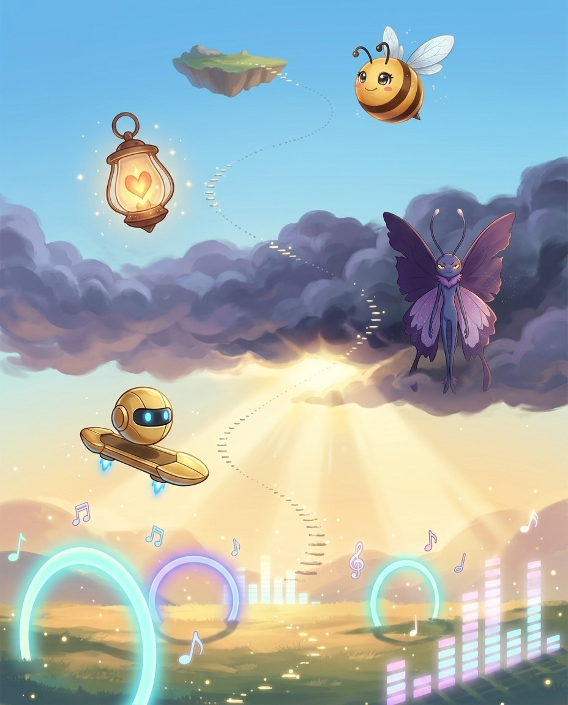
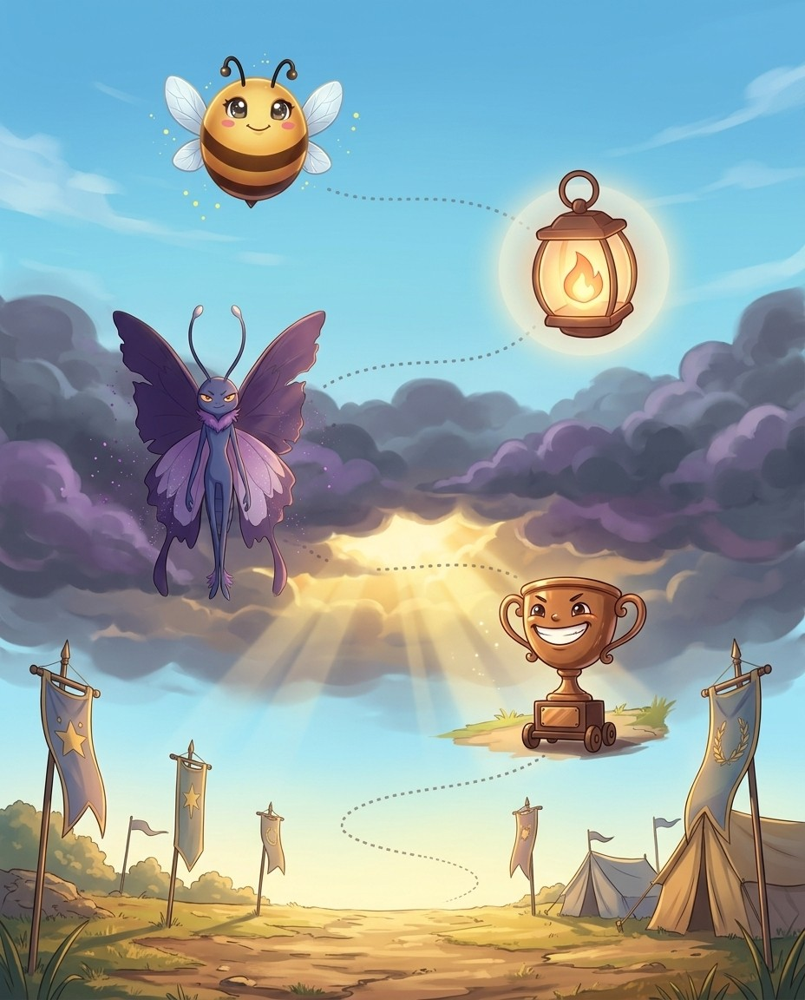
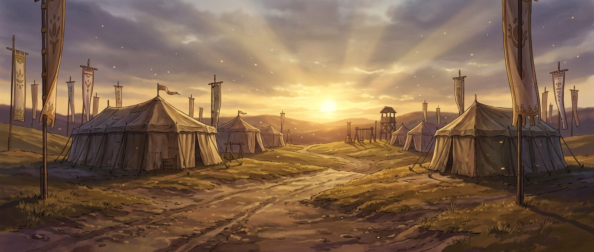
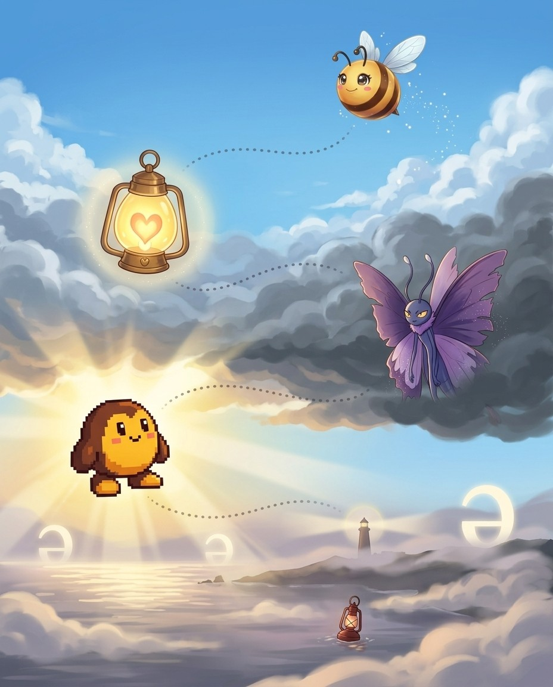
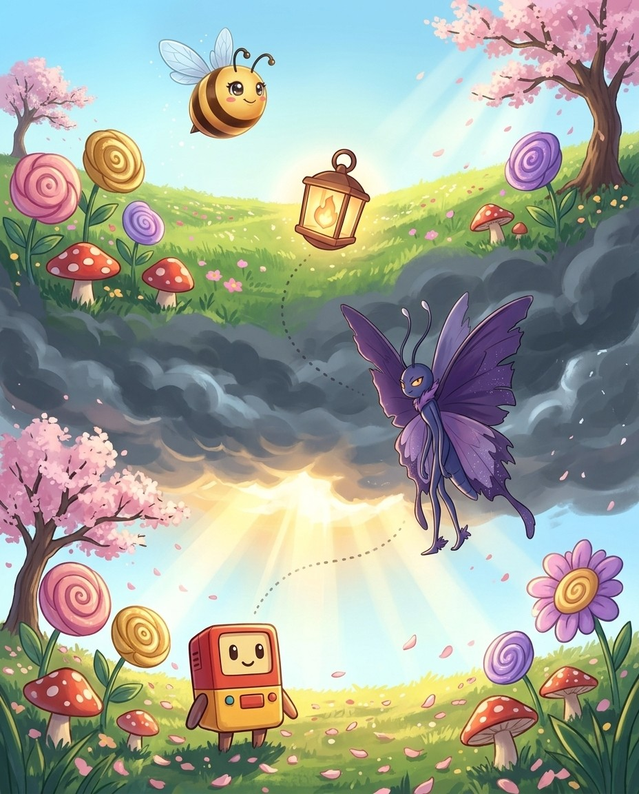
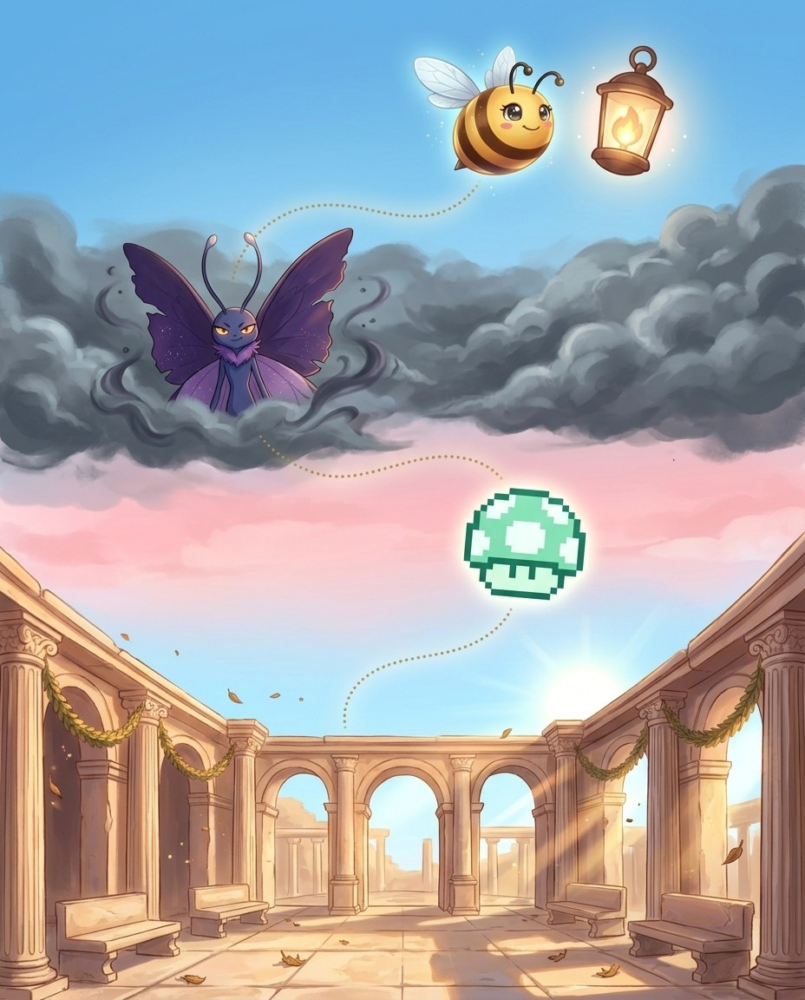
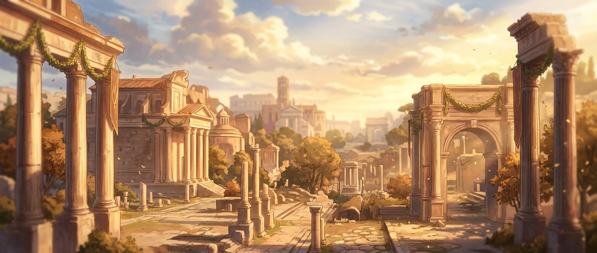
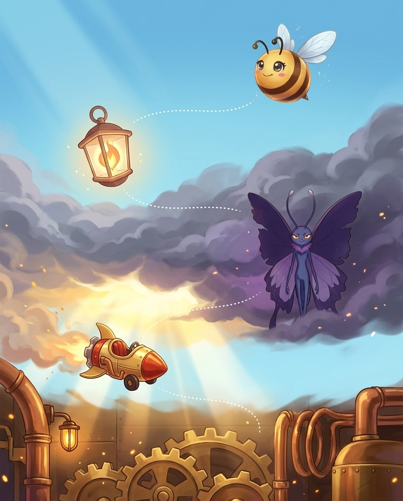
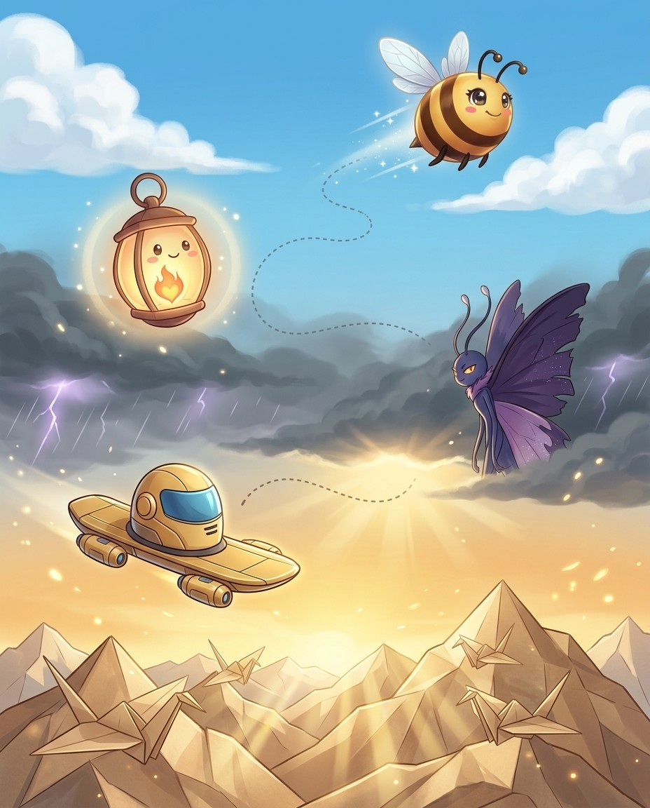
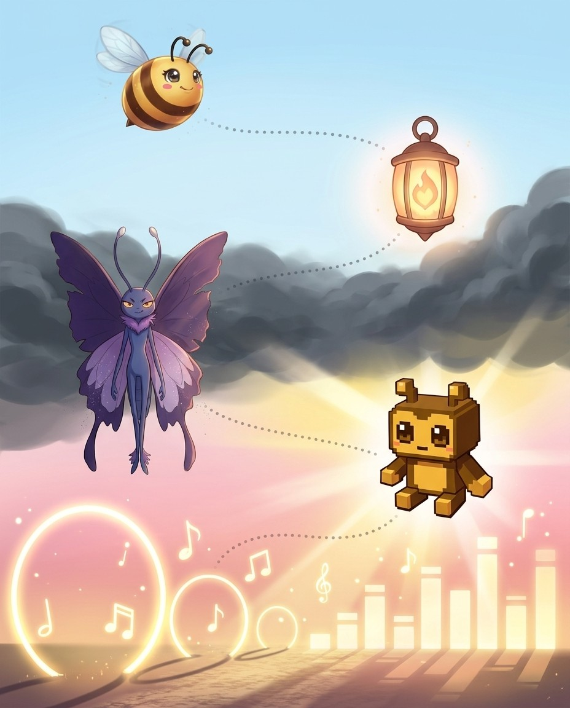

17 chapters278 practice wordsquizzes & puzzles throughout
Bizzy & Lumen in the Word Junkyard Everything ever made ends up in the Junkyard — and every pile has a name.
Subject SprintsHow this book works
Five moves. That's the whole system.
Lumen here. Science, music, law, food — words of everything — that's the route. The crew and I will keep it moving; you keep the pencil moving.
1
Read the story
Each chapter opens as a storyboard. Vex sets the trap; the crew talks you out of it.
2
Steal the pro move
The dark box is how a champion thinks on stage. It works on brand-new words too.
3
Spell out loud, then write
Say it, spell it aloud, write it. The order matters — it is how the stage will ask for it.
4
Pass the checkpoint
A short quiz straight from the Word Map. Circle your answers; the back of the book keeps the truth.
5
Play the puzzle, hunt the Big List
Every chapter ends in a game built from its own words, and the back holds every word in the book. Circle what you own.
🔊 Grown-ups: every chapter is narrated, and every word recorded, in the Bizzing Bee app
the Word Junkyard
Bizzing Bee · Subject Sprints1
Subject SprintsThe cast
Bizzy — and this book's guide, Lumen
The crew of Vol. 9
Every book travels with a crew. These nine hand you puzzles, host the checkpoints and occasionally get a line right before you do.
Bizzy — The little bee who spells the world back together, one petal at a time. · Lumen — A living spotlight that never lets the stage go dark.
Nitro
OVR 83
Champion of the Speedway · Fast Forward
One button for a burst of pure speed.
Hover
OVR 69
Champion of the Speedway · Unflappable
No wheels, no limits.
Airtime
OVR 65
Speller of the Speedway · Fast Forward
Lives for the moment all four wheels leave the ramp.
Champ
OVR 70
Champion of the Speedway · Power Core
The checkered flag belongs to Champ.
Tokeny
OVR 52
Speller of the Arcade · Big Brain
One token, one more try.
Boss Bot
OVR 69
Champion of the Arcade · Mind Palace
The big challenge at the end of the level.
Striker
OVR 52
Speller of the Speedway · Fast Forward
Always first to the finish line.
1-UP
OVR 76
Champion of the Arcade · Unflappable
One more life, one more word — never game over.
And the other one
Vex the word-moth sneaks through every chapter, planting the exact mistakes real spellers make. Spot the trap before you step in it.
Bizzing Bee · Subject Sprints2
WELCOME TO
The Word Junkyard
Everything ever made ends up in the Junkyard — and every pile has a name.
Bizzing Bee · Subject Sprints3
Chapter 1 · Medical Body Systems VocabularyStory · ★★☆
1
Subject-Area Vocabulary
Medical Body Systems Vocabulary
📍 the Word Junkyard
BizzyMedical words look scary but follow one tidy recipe. Take a body-part root, add a suffix for what's happening, and you've built…
UH-OH!
Lumen · Vex is circlingOne trap: pneumonia, lung inflammation, hides a silent p at the very front. Spell it p-n-e-u-m-o-n-i-a. See the part plus the suffix,…
PNEUMONIA
GOT IT!
NitroCardio means heart. So cardiovascular is heart plus blood vessels. And myocardial adds myo, meaning muscle, to give us the heart muscle.
MYOCARDIAL
TokenyNeuro means nerve, as in neurological. And the suffix i-t-i-s always means inflammation. So encephalitis, with encephalo meaning brain, is brain inflammation.
ENCEPHALITIS
🔊 narrated in the appturn the page — the whole trick, explained →
Bizzing Bee · Subject Sprints4
Chapter 1 · Medical Body Systems VocabularyThe idea · ★★☆
The big idea
Medical vocabulary follows a strict pattern: Greek or Latin body-part root + Greek suffix = a medical term. Once you know the six major body-system roots and the handful of suffixes, you can decode any medical word.
The pro move
GASTROINTESTINAL
Say it. ga-stroh-ih-NTEH-stuh-nuhl
Spell it. G · A · S · T · R · O · I · N · T · E · S · T · I · N · A · L
Say it again. ga-stroh-ih-NTEH-stuh-nuhl
Syllables. gae · strow · ih · nteh · stah · nah · l
Sounds → Letters. [gas=GAS] [troh=TRO] [in=IN] [TES=TES] [tuh=TI] [nul=NAL]
Exception. gastro- = stomach; intestin- = intestines; -al = adjective suffix; 6 syllables; gas-troh-in-TES-tuh-nul
Origin. Greek
Root. Greek gaster = stomach + Latin intestinum = intestine
Cardio (Heart)
Cardiovascular = heart + blood vessels. Myocardial (myo- = muscle) = relating to the heart muscle. Pericarditis = inflammation of the membrane around the heart. Electrocardiogram (EKG) = electro- + cardio- + -gram = 17 letters that all follow …
Neuro (Brain/Nerve)
Neurological = relating to the nervous system. Neurotransmitter = chemical messenger between nerves. Encephalitis (encephalo- = brain) = brain inflammation. Meningitis (meninges = membranes around brain) = inflammation of brain membranes. Ever…
Gastro (Stomach/Gut)
Gastrointestinal = stomach + intestines. Gastroenterology = gastro- + entero- (intestine) + -logy = the study of the digestive system. Esophagus (oisophagos = food carrier) = the food tube. Peristalsis (peri- = around + stalsis = contraction) …
Pulmo (Lung) & Hema (Blood)
Pulmonary (pulmo = lung) = relating to the lungs. Pneumonia (pneumon = lung) = lung inflammation. Hematopoiesis (hemato- = blood + poiesis = making) = making blood cells in the bone marrow. Hemoglobin = the oxygen-carrying blood protein. ⚠️ Pn…
Vex alert
Your ESOPHAGUS carries food—ESO(inside)+PHAG(eat)+US; it ends in -US not -OUS, because one tube, not an adjective.
Check yourself
Cover the page and spell cardiovascular · myocardial · electrocardiogram out loud. Miss one? Read the idea again — it's faster than guessing twice.
Bizzing Bee · Subject Sprints5
Chapter 1 · Medical Body Systems VocabularyPractice · ★★☆
DCardiovascular = heart + blood vessels. Myocardial (myo- = muscle) = relating to the heart musc…
4. “▁▁▁ — your heart pumps through VASCUlar tubes; no extra A sneaks into VASCUL.” — which word is this hook about?
Aneurological
Bcardiovascular
Celectrocardiogram
Dmyocardial
Dictation round
Hand this page to anyone nearby. They read the words from the answer key (Ch. 1 dictation, at the back) — you write, no peeking.
1.
2.
Bizzing Bee · Subject Sprints8
Chapter 1 · Medical Body Systems VocabularyGame · ★★☆
Hover's puzzle page
Crossword
I own this
1
2
3
4
5
6
Across
1. infectious disease characterized by inflammation of the meninges (the tissu…
6. of or relating to or used in or practicing neurology
Down
1. of or relating to the myocardium
2. inflammation of the brain usually caused by a virus; symptoms include heada…
3. a hemoprotein composed of globin and heme that gives red blood cells their …
4.
5. relating to or affecting the lungs
💬
Bee Break · someone said it better
“They meet you by your clothes, and see you off by your mind.”
— Russian Proverb, a traditional saying
Bizzing Bee · Subject Sprints9
Chapter 2 · Natural Science VocabularyStory · ★★☆
2
Subject-Area Vocabulary
Natural Science Vocabulary
📍 the Vibe

BizzyLong science words aren't random. They're built from Greek and Latin roots stacked together, each spelled by its own rules. Know the…
UH-OH!
Lumen · Vex is circlingThe trickiest is stoichiometry. Break it: stoikheion, meaning element, plus metry, meaning measuring. Measuring chemical proportions. Spell it s-t-o-i-c-h-i-o, then metry.
STOICHIOMETRY
GOT IT!
HoverTake photosynthesis: photo, meaning light, plus synthesis, meaning placing together. Plants placing light together to make food. Five Greek parts, all spelled…
PHOTOSYNTHESIS
Boss BotIn chemistry, lysis means breaking. So electrolysis is breaking chemical bonds with electricity. The same lysis sits inside catalysis too.
ELECTROLYSIS
🔊 narrated in the appturn the page — the whole trick, explained →
Bizzing Bee · Subject Sprints10
Chapter 2 · Natural Science VocabularyThe idea · ★★☆
The big idea
Science vocabulary is systematically built from Greek and Latin roots. Every term follows the pattern: process + modifier + suffix. Once you know the roots, science words spell themselves.
The pro move
PHOTOSYNTHESIS
Say it. f-oh-t-oh-s-IH-n-th-uh-s-ih-s
Spell it. P · H · O · T · O · S · Y · N · T · H · E · S · I · S
Say it again. f-oh-t-oh-s-IH-n-th-uh-s-ih-s
Syllables. p · h · o · t · o · s · y · n · t · h · e · s · i · s
Sounds → Letters. [foh=PHO] [toh=TO] [SIN=SYN] [thuh=THE] [sis=SIS]
Exception. photo- = light; syn- = together; -thesis = placing; -th- = /th/; ALL components Greek; 5 syllables
Origin. Latin
Root. Greek photos = light + synthesis = putting together
Biology Words
Photosynthesis = light + together + placing = plants converting light to food. Metamorphosis = change of form. Symbiosis = living together mutually. Mitosis (mitos = thread) = cell division where chromosomes thread through. Meiosis (meioun = t…
Chemistry Words
Catalysis (katalysis = dissolution) = chemical reaction facilitated by a catalyst. Electrolysis (electro- + lysis = breaking) = breaking chemical bonds with electricity. Stoichiometry (stoikheion = element + metry) = measuring chemical proport…
Physics Words
Electromagnetic = electric + magnetic fields together. Thermodynamics = thermo- + dynamis (power) = science of heat and energy. Centrifugal (centri- + fuga = flight) = fleeing from center. Centripetal (centri- + petere = seek) = seeking the ce…
Geology Words
Sedimentary (sedimentum = settling) = rock formed from settled particles. Igneous (ignis = fire) = rock formed from volcanic fire. Metamorphic = rock changed in form by heat/pressure. Stratigraphic (stratum + graphos) = the written record of r…
Vex alert
metaMORPHosis: the caterpillar MORPHs through a process (-osis), not an 'a'.
Check yourself
Cover the page and spell photosynthesis · metamorphosis · symbiosis out loud. Miss one? Read the idea again — it's faster than guessing twice.
Chapter 3 · Fine Arts & Music VocabularyStory · ★★☆
3
Subject-Area Vocabulary
Fine Arts & Music Vocabulary
📍 the Big Stage
BizzyArts words come from three places. Italian rules music, French rules dance and visual art, and Greek rules theory. Spot the language,…
UH-OH!
Lumen · Vex is circlingWatch pirouette, a spinning turn on one foot. It packs the French o-u, a double t, and a silent e at the…
PIROUETTE
GOT IT!
AirtimeGreek music theory gives syncopation, putting the beat where you don't expect it. Break it: syn, meaning together, plus koptein, meaning to…
SYNCOPATION
StrikerFrench dance gives us arabesque, a ballet pose. Break it: Arab, plus the ending e-s-q-u-e, meaning in the style of. So arabesque…
ARABESQUE
🔊 narrated in the appturn the page — the whole trick, explained →
Bizzing Bee · Subject Sprints16
Chapter 3 · Fine Arts & Music VocabularyThe idea · ★★☆
The big idea
Arts vocabulary draws from Italian (music), French (dance and visual arts), and Greek (theory). Knowing the language of origin immediately suggests the spelling pattern.
The pro move
CHIAROSCURO
Say it. —
Spell it. C · H · I · A · R · O · S · C · U · R · O
Say it again. —
Syllables. c · h · i · a · r · o · s · c · u · r · o
Sounds → Letters. [kyar=CHIAR] [oh=O] [SKOOR=SCUR] [oh=O]
Exception. Italian: chiaro = clear + oscuro = dark; -ch- = /ky/ in Italian; 4 syllables; kyar-oh-SKOOR-oh
Origin. —
Root. —
Italian Music Dynamics
Already covered in C47 — the key spelling pattern here is the -issimo superlative (pianissimo, fortissimo) with double-s, and the -etto/-etta diminutive (allegretto). Crescendo = C-R-E-S-C-E-N-D-O (-sc- before e = /s/). Diminuendo = D-I-M-I-N-…
Dance Vocabulary (French)
Arabesque (Arab + -esque) = in the Arabic style = a ballet position. Pirouette = a spinning turn. Plié (plier = to bend) = a bending movement. Jeté (jeter = to throw) = a leap. Pas de deux (pas = step + de + deux = two) = a dance for two. Entr…
Visual Arts Terms
Chiaroscuro (Italian) = light and dark contrast in painting. Impasto (Italian: impastare = to knead) = thick paint texture. Sfumato (Italian: sfumare = evaporate) = soft, hazy outlines. Pointillism (point = dot) = painting with dots of pure co…
Music Theory Terms
Syncopation (syn- + koptein = cut) = rhythmic emphasis on normally unaccented beats. Counterpoint (contra- + punctus = point) = independent melodic lines sounding together. Cadenza (Italian, from cadere = fall) = an elaborate solo passage near…
Vex alert
A cadENZA is an Italian FRENZY of solo notes — remember the Z like the zing of a violin.
Check yourself
Cover the page and spell chiaroscuro · impasto · sfumato out loud. Miss one? Read the idea again — it's faster than guessing twice.
Bizzing Bee · Subject Sprints17
Chapter 3 · Fine Arts & Music VocabularyPractice · ★★☆
Say it. Spell it out loud. Write it.
🔊 every word has real audio in the app
chiaroscuro
impasto
/ im-PAH-stoh / · /ɪmˈpɑstoʊ/
painting that applies the pigment thickly so that brush or palette knife marks are visible
hook: IMPASTo: thick paint like thick PASTE pressed onto canvas
Van Gogh's masterful use of ▁▁▁ makes his paintings look almost three-dimensional, with swirling ridges o…
sfumato
pointillism
arabesque
/ ar-ah-BESK / · /ɑrɑˈbɛsk/
position in which the dancer has one leg raised behind and arms outstretched in a conventio…
hook: Arabesque ends in -ESQUE like 'picturesque' — a beautifully posed, picture-like position.
The ballerina held a flawless ▁▁▁ for several breathtaking seconds, her back leg perfectly parallel to …
pirouette
/ p-ih-r-oo-EH / · /pɪruˈɛ/
is a whirling about on one foot as in ballet dancing
hook: PIROUETTE has FOUR vowels in a row (ouet) — the dancer spins four times before sticking the…
The ballerina completed a flawless ▁▁▁ at center stage, spinning so fast she seemed to blur.
the Big Stage
Bizzing Bee · Subject Sprints18
Chapter 3 · Fine Arts & Music VocabularyRapid round · ★★☆
More ammo — one line each.
syncopation/SIH-ngkuh-pay-shuhn/ (phonology) the loss of sounds from within a word (as in `fo'c'…
counterpoint/KOW-nter-poynt/ a musical form involving the simultaneous sound of two or more …
cadenza/kah-DEN-zah/ a brilliant solo passage occurring near the end of a piece of m…
leitmotif/LEYE-tmoh-teef/ a melodic phrase that accompanies the reappearance of a person …
colonnade/k-ah-l-uh-n-AY-d/ a series of regularly spaced columns
tympanum/TIH-mpuh-nuhm/ the main cavity of the ear; between the eardrum and the inner e…
buttress/BUH-truhs/ a support usually of stone or brick; supports the wall of a bui…
fenestration/fen-es-TRAY-shun/ the arrangement of windows in a building
diminuendo
crescendo/krih-SHEH-ndoh/ (music) a gradual increase in loudness
Lock them in
Pick 4 words from above. Say each one as you write it — three times, no shortcuts. The third copy is the one your hand remembers.
the Big Stage
Bizzing Bee · Subject Sprints19
Chapter 3 · Fine Arts & Music VocabularyCheckpoint · ★★☆
Tokeny · Speller of the Arcade runs the checkpoint
Do you own the idea?
Same questions the app asks at this stop on the Word Map. Circle, then check the back. Tokeny's power is Big Brain — borrow it.
1. Which of these is the big idea of “Fine Arts & Music Vocabulary”?
AArts vocabulary draws from Italian (music), French (dance and visual arts), and Greek (theory).
BLatin ex- = out of.
CLatin inter- = between two or more things.
DHomophones are words that sound identical but are spelled differently and mean different things.
2. Which word belongs to this chapter's family?
Adiaphanous
Bchiaroscuro
Cimpeccable
Dchocolate
3. The card “Italian Music Dynamics” says…
AChiaroscuro (Italian) = light and dark contrast in painting. Impasto (Italian: impastare = to k…
BAlready covered in C47 — the key spelling pattern here is the -issimo superlative (pianissimo, …
DArabesque (Arab + -esque) = in the Arabic style = a ballet position. Pirouette = a spinning tur…
4. “▁▁▁: thick paint like thick PASTE pressed onto canvas” — which word is this hook about?
Apointillism
Bsfumato
Cimpasto
Dchiaroscuro
Dictation round
Hand this page to anyone nearby. They read the words from the answer key (Ch. 3 dictation, at the back) — you write, no peeking.
1.
2.
Bizzing Bee · Subject Sprints20
Chapter 3 · Fine Arts & Music VocabularyGame · ★★☆
Champ's puzzle page
Scramble & rescue
I own this
Unscramble
tumafos
mlisnlpitio
tmispao
aaeqrubes
srcauhoiocr
muyatpnm
Rescue the vowels
sf_m_t_
_r_b_sq__
tymp_n_m
p_r___tt_
d_m_n__nd_
c__nt_rp__nt
🎈
Bee Break · idiom to drop at dinner
carry the weight of the world
feel burdened by enormous worries or responsibilities
the Big Stage
Bizzing Bee · Subject Sprints21
Chapter 4 · Culinary VocabularyStory · ★★☆
4
Subject-Area Vocabulary
Culinary Vocabulary
📍 the Proving Ground

BizzyThe kitchen is international. French rules the professional terms, Italian brings pasta and cheese words, and each language carries its own spelling…
UH-OH!
Lumen · Vex is circlingFrench gives us roux, a flour and butter base, named for its reddish-brown color. Spell it r-o-u-x, and yes, that final x…
ROUX
GOT IT!
ChampItalian flips the clusters. In bruschetta, s-c-h says sk, so it's broo-sketta. But in prosciutto, s-c-i says sh, so it's pro-shoot-toh. Same…
1-UPMirepoix is the diced onion, celery, and carrot base. Notice the French o-i, which sounds like wah. So it's meer-pwah, ending in…
MIREPOIX
🔊 narrated in the appturn the page — the whole trick, explained →
Bizzing Bee · Subject Sprints22
Chapter 4 · Culinary VocabularyThe idea · ★★☆
The big idea
Food vocabulary is international — French dominates professional cooking, Italian contributes pasta and cheese terms, Spanish adds chili and spice words, Japanese contributes specific techniques. The spelling signals follow language of origin.
The pro move
JULIENNE
Say it. joo-lee-EN
Spell it. J · U · L · I · E · N · N · E
Say it again. joo-lee-EN
Syllables. ju · li · enne
Sounds → Letters. [joo=JU] [lee=LI] [EN=ENNE]
Exception. French: from Julien (a proper name); -enne = French feminine ending; silent final -e; stress: joo-lee-EN
Origin. French
Root. Named after the French given name Julien or Julie; origin of the culin
French Cooking Terms (Professional)
Julienne = vegetables cut in thin matchsticks. Brunoise = vegetables cut in tiny cubes. Mirepoix = diced onion, celery, carrot base (-oi- = /wah/ French pattern). Beurre blanc = beurre (butter) + blanc (white) = a white butter sauce. Roux (rou…
French Pastry & Restaurant Terms
Crème brûlée (brûler = burn) = burned cream. Amuse-bouche (amuser = to amuse + bouche = mouth) = a tiny appetizer. Mise en place = mise (put) + en (in) + place (place) = everything in its place before cooking. Soufflé (souffler = to blow) = a …
Saffron (Arabic za'faran) = saf- → S-A-F-F-R-O-N (double-f). Turmeric = T-U-R-M-E-R-I-C (not tumeric — the first r is often omitted in speech). Cardamom = C-A-R-D-A-M-O-M (not cardamon). Worcestershire = WOO-ster-sheer (the spelling is radical…
Vex alert
Remember the hidden 'r': tur-MER-ic, not tu-MER-ic — there's an 'r' in the middle.
Sound trap
roux sounds like rue — at the mic, always ask for the meaning.
Check yourself
Cover the page and spell julienne · brunoise · mirepoix out loud. Miss one? Read the idea again — it's faster than guessing twice.
Bizzing Bee · Subject Sprints23
Chapter 4 · Culinary VocabularyPractice · ★★☆
Say it. Spell it out loud. Write it.
🔊 every word has real audio in the app
julienne
/ joo-lee-EN / · /dʒuliˈɛn/
a vegetable cut into thin strips (usually used as a garnish)
hook: JULIENne: JULIEN the French chef cuts everything into thin strips
The chef ▁▁▁ the carrots and zucchini into perfectly uniform strips before arranging them in a colorful…
brunoise
/ broo-NWAZ / · /bruˈnwæz/
A culinary technique in which vegetables or other foods are cut into very small, uniform cu…
hook: BRUNOISE: think 'brew noise in tiny cubes'—say bru-NWAZ, a French tiny-dice cut.
The chef's ▁▁▁ of carrots and celery was so perfectly uniform it looked machine-cut.
mirepoix
roux
/ ROO / · /ˈru/
a mixture of fat and flour heated and used as a basis for sauces
hook: A ROUX sounds like 'roo' but hides an X at the end — think of a kangaroo chef making a sauc…
She whisked the ▁▁▁ carefully over low heat until it turned a deep golden brown before adding the broth.
bruschetta
/ broo-SKEH-tah / · /bruˈskɛtɑ/
toasted bread rubbed with garlic and topped with olive oil, tomatoes, and herbs
hook: BRUSCHETTA has no SH — it's broo-SKET-ta; the SC makes a K sound, like a knife scraping toa…
At the Italian restaurant, we started with crispy ▁▁▁ topped with fresh tomatoes and basil.
prosciutto
/ pruh-SHOO-toh / · /prəˈʃutoʊ/
Italian salt-cured ham usually sliced paper thin
hook: Say it like 'pruh-SHOO-toh' — this Italian ham makes you shout SHOO as you chase people awa…
The chef draped thin slices of ▁▁▁ over the ripe melon for a classic Italian appetizer.

the Proving Ground
Bizzing Bee · Subject Sprints24
Chapter 4 · Culinary VocabularyRapid round · ★★☆
More ammo — one line each.
ossobuco
risotto/ree-SAW-toh/ rice cooked with broth and sprinkled with grated cheese
carpaccio
saffron/s-A-f-r-uh-n/ is a crocus having showy purple flowers
turmeric/TUR-muh-rihk/ widely cultivated tropical plant of India having yellow flowers…
cardamom/KAH-rduh-muhm/ rhizomatous herb of India having aromatic seeds used as seasoni…
worcestershire/WUU-ster-sher/ a savory sauce of vinegar and soy sauce and spices
teriyaki/teh-rih-YAH-kee/ beef or chicken or seafood marinated in spicy soy sauce and gri…
edamame/ed-uh-MAH-may/ young soybeans harvested while still green and tender, typicall…
soufflé/soo-FLAY/ light fluffy dish of egg yolks and stiffly beaten egg whites mi…
amuse-bouche
Lock them in
Pick 4 words from above. Say each one as you write it — three times, no shortcuts. The third copy is the one your hand remembers.
the Proving Ground
Bizzing Bee · Subject Sprints25
Chapter 4 · Culinary VocabularyCheckpoint · ★★☆
Boss Bot · Champion of the Arcade runs the checkpoint
Do you own the idea?
Same questions the app asks at this stop on the Word Map. Circle, then check the back. Boss Bot's power is Mind Palace — borrow it.
1. Which of these is the big idea of “Culinary Vocabulary”?
AFood vocabulary is international — French dominates professional cooking, Italian contributes p…
BLatin trans- = across, beyond, or through complete change.
CLatin re- = again or back.
DContronyms (also called autoantonyms) are words with two opposite meanings.
2. Which word belongs to this chapter's family?
Adesiccate
Bjulienne
Cdistraught
Dthought
3. The card “French Cooking Terms (Professional)” says…
AJulienne = vegetables cut in thin matchsticks. Brunoise = vegetables cut in tiny cubes. Mirepoi…
4. “▁▁▁: JULIEN the French chef cuts everything into thin strips” — which word is this hook about?
Ajulienne
Bbrunoise
Croux
Dmirepoix
Dictation round
Hand this page to anyone nearby. They read the words from the answer key (Ch. 4 dictation, at the back) — you write, no peeking.
1.
2.
Bizzing Bee · Subject Sprints26
Chapter 4 · Culinary VocabularyGame · ★★☆
Tokeny's puzzle page
Crossword
I own this
1
2
3
4
5
6
7
8
9
Across
2.
3.
6. toasted bread rubbed with garlic and topped with olive oil, tomatoes, and h…
7. a mixture of fat and flour heated and used as a basis for sauces
8. rice cooked with broth and sprinkled with grated cheese
9. is a crocus having showy purple flowers
Down
1. Italian salt-cured ham usually sliced paper thin
4.
5. a vegetable cut into thin strips (usually used as a garnish)
6. A culinary technique in which vegetables or other foods are cut into very s…
Bee Break · Nitro's true fact
Some race cars use nitrous oxide for a burst of extra oxygen — and a burst of extra speed.
Bizzing Bee · Subject Sprints27
Chapter 5 · Geography & Place WordsStory · ★☆☆
5
Subject-Area Vocabulary
Geography & Place Words
📍 the Grey Sea

BizzyGeography words borrow widely: Greek for landforms, Spanish and Portuguese for the Americas, and Old Norse for the far north. The origin…
UH-OH!
Lumen · Vex is circlingHere's a spelling monster. Isthmus, a narrow neck of land, comes from isthmos, meaning neck. Watch that s-t-h-m pileup. Spell it i-s-t-h-m-u-s.
ISTHMUS
GOT IT!
TokenyTake peninsula, land almost surrounded by water. Break it: paene, meaning almost, plus insula, meaning island. A peninsula is almost an island.
PENINSULA
MechNorway gives us fjord, a narrow sea inlet between cliffs. That f-j start is pure Norse, a combination English almost never makes…
FJORD
🔊 narrated in the appturn the page — the whole trick, explained →
Bizzing Bee · Subject Sprints28
Chapter 5 · Geography & Place WordsThe idea · ★☆☆
The big idea
Geographical vocabulary draws from multiple languages — Greek for landform concepts, Spanish and Portuguese for the Americas, Arabic for Middle Eastern geography, and Old Norse for Scandinavian features. Origin signals spelling.
The pro move
ARCHIPELAGO
Say it. ah-rkuh-PEH-luh-goh
Spell it. A · R · C · H · I · P · E · L · A · G · O
Say it again. ah-rkuh-PEH-luh-goh
Syllables. aa · rkah · peh · lah · gow
Sounds → Letters. [ar=AR] [kih=CHI] [PEL=PEL] [uh=A] [goh=GO]
Exception. Italian/Greek: arkhi- = chief + pelagos = sea; -ch- = /k/; stress: ar-kih-PEL-uh-goh
Origin. Italian
Root. Greek arkhi-(chief) + pelagos(sea) = chief sea (the Aegean)
Landform Words
Archipelago (arkhi- + pelagos = sea) = a group of islands in a sea. Peninsula (paene = almost + insula = island) = a land almost surrounded by water. Isthmus (isthmos = neck) = a narrow land connection = I-S-T-H-M-U-S (the th and m cluster). E…
Water Words
Estuary (aestus = tide) = a tidal river mouth where fresh and salt water meet. Lagoon (Italian laguna from Latin lacuna = pool) = a shallow body of water. Fjord (Norwegian) = a narrow sea inlet between cliffs — F-J-O-R-D (the fj- cluster is pu…
Climate Zone Words
Savanna (Spanish sabana from Taino) = a tropical grassland with scattered trees. Tundra (Russian from Finnish tunturi = treeless plain) = the Arctic treeless plain. Chaparral (Spanish chaparro = dwarf evergreen oak) = dense shrubby vegetation …
Spanish/Portuguese Americas Words
Canyon (cañón = large tube/pipe) = a deep gorge. Mesa (mesa = table) = a flat-topped hill. Arroyo (arroyo = stream) = a dry gully. Laguna = a lagoon. Pampa (Quechua pampa = plain) = the South American grassland. Many American landscape words a…
Vex alert
A savanna has one 'n' in the middle — one vast, open plain with nothing to crowd it.
Sound trap
savanna sounds like savannah — at the mic, always ask for the meaning.
Check yourself
Cover the page and spell archipelago · peninsula · isthmus out loud. Miss one? Read the idea again — it's faster than guessing twice.
Bizzing Bee · Subject Sprints29
Chapter 5 · Geography & Place WordsPractice · ★☆☆
Say it. Spell it out loud. Write it.
🔊 every word has real audio in the app
archipelago
/ ah-rkuh-PEH-luh-goh / · /ɑrkəˈpɛləɡoʊ/
a group of many islands in a large body of water
hook: ARCHipelago: the ARCH chief of the SEA holds many islands — spell out arch-i-pel-a-go like …
The sailors navigated carefully through the ▁▁▁, weaving between dozens of rocky islands.
peninsula
/ puh-NIH-nsuh-luh / · /pəˈnɪnsələ/
a large mass of land projecting into a body of water
hook: A peninsula is 'almost an island' — pen+insula, one 'n', like a pen pointing into water.
The small fishing village sat at the tip of a rocky ▁▁▁ surrounded by crashing waves on three sides.
isthmus
/ IH-s-m-uh-s / · /ˈɪsməs/
is a narrow strip of land with water on both sides
hook: An isTHMus has a silent TH—think of it as the thin, quiet strip of land squeezed between tw…
The narrow ▁▁▁ of Panama connects North America and South America by a thin strip of land.
escarpment
/ eh-SKAH-rpmuhnt / · /ɛˈskɑrpmənt/
a long steep slope or cliff at the edge of a plateau or ridge; usually formed by erosion
hook: An esCARP ment has a CARP-shaped sharp drop — imagine a fish leaping off a cliff
The hikers paused at the top of the ▁▁▁ to gaze over the vast valley hundreds of feet below.
estuary
/ EH-schoo-eh-ree / · /ˈɛstʃuɛri/
the wide part of a river where it nears the sea; fresh and salt water mix
hook: An ESTUary is where the ESTUS (tide) meets the river — it's a tidal mixing zone.
The biology class traveled to the ▁▁▁ to observe the unique mix of plants and animals that thrive where t…
lagoon
/ l-uh-g-OO-n / · /ləɡˈun/
is an area of shallow water separated from the sea by sandy dunes
hook: A LAGOON has double O like the two round eyes of a calm, enclosed pool of water.
The children snorkeled in the calm, crystal-clear ▁▁▁ sheltered by a ring of white sand.
the Grey Sea
Bizzing Bee · Subject Sprints30
Chapter 5 · Geography & Place WordsRapid round · ★☆☆
More ammo — one line each.
fjord/FYAWRD/ a long narrow inlet of the sea between steep cliffs; common in …
bayou/b-AY-oo/ is a marshy arm of a river usually sluggish or stagnant
savanna/suh-VA-nuh/ a flat grassland in tropical or subtropical regions
tundra/TUH-ndruh/ a vast treeless plain in the Arctic regions where the subsoil i…
chaparral/sh-a-p-ur-A-l/ is a dense growth of shrubs or trees
taiga/TY-guh/ The vast boreal forest biome found across northern regions of R…
canyon/KA-nyuhn/ a ravine formed by a river in an area with little rainfall
mesa/MAY-suh/ flat tableland with steep edges
arroyo/er-OY-oh/ a stream or brook
pampa
veldt/VELT/ elevated open grassland in southern Africa
Lock them in
Pick 4 words from above. Say each one as you write it — three times, no shortcuts. The third copy is the one your hand remembers.
the Grey Sea
Bizzing Bee · Subject Sprints31
Chapter 5 · Geography & Place WordsCheckpoint · ★☆☆
Striker · Speller of the Speedway runs the checkpoint
Do you own the idea?
Same questions the app asks at this stop on the Word Map. Circle, then check the back. Striker's power is Fast Forward — borrow it.
1. Which of these is the big idea of “Geography & Place Words”?
AGeographical vocabulary draws from multiple languages — Greek for landform concepts, Spanish an…
BLatin re- = again or back.
CLatin trans- = across, beyond, or through complete change.
DContronyms (also called autoantonyms) are words with two opposite meanings.
2. Which word belongs to this chapter's family?
Aarchipelago
Bdesiccate
Cthought
Ddistraught
3. The card “Landform Words” says…
ACanyon (cañón = large tube/pipe) = a deep gorge. Mesa (mesa = table) = a flat-topped hill. Arro…
BEstuary (aestus = tide) = a tidal river mouth where fresh and salt water meet. Lagoon (Italian …
CSavanna (Spanish sabana from Taino) = a tropical grassland with scattered trees. Tundra (Russia…
DArchipelago (arkhi- + pelagos = sea) = a group of islands in a sea. Peninsula (paene = almost +…
4. “▁▁▁: the ARCH chief of the SEA holds many islands — spell out arch-i-pel-a-go like stepping stones between islands.” — which word is this hook about?
Aescarpment
Bisthmus
Carchipelago
Dpeninsula
Dictation round
Hand this page to anyone nearby. They read the words from the answer key (Ch. 5 dictation, at the back) — you write, no peeking.
“Creativity is a gift. It doesn't come through if the air is cluttered.”
— John Cleese, British comedian
Bizzing Bee · Subject Sprints33
Chapter 6 · Law & Government VocabularyStory · ★★★
6
Subject-Area Vocabulary
Law & Government Vocabulary
📍 the Meadow

BizzyEnglish law was conducted in Latin for hundreds of years, so legal words still follow strict Latin spelling. Break them into roots…
UH-OH!
Lumen · Vex is circlingA subpoena is a legal order to appear. Break it: sub, meaning under, plus poena, meaning penalty. Under penalty! Watch the silent…
SUBPOENA
GOT IT!
Boss BotGovernment types stack Greek roots too. Oligarchy is oligos, meaning few, plus arkhein, meaning to rule. Rule by a few. Swap the…
OLIGARCHY
NitroJurisprudence is the philosophy of law. Break it: juris, meaning of law, plus prudentia, meaning wisdom. The wisdom of law. And it…
JURISPRUDENCE
🔊 narrated in the appturn the page — the whole trick, explained →
Bizzing Bee · Subject Sprints34
Chapter 6 · Law & Government VocabularyThe idea · ★★★
The big idea
Legal and governmental vocabulary draws almost entirely from Latin — English law was conducted in Latin for centuries. These words follow strict Latin spelling rules and appear frequently in championship bees.
The pro move
JURISPRUDENCE
Say it. juu-ruh-SPROO-duhns
Spell it. J · U · R · I · S · P · R · U · D · E · N · C · E
Say it again. juu-ruh-SPROO-duhns
Syllables. jhuh · rah · spruw · dah · ns
Sounds → Letters. [joor=JU] [is=RIS] [PROO=PRU] [dens=DENCE]
Exception. juris = of law + prudentia = foresight; -ence suffix; stress: joor-is-PROO-dens
Origin. Latin
Root. Latin jurisprudentia = knowledge of law, from jus = law + prudentia =
Core Legal Latin
Habeas corpus (habeas = you should have + corpus = body) = the right to appear before a court. Subpoena (sub- + poena = penalty) = under penalty = a legal demand to appear. Jurisprudence (juris = of law + prudentia) = the philosophy of law. Pl…
Types of Government
Oligarchy (oligos = few + arkhein = rule) = rule by a few. Plutocracy (ploutos = wealth + kratos) = rule by the wealthy. Theocracy (theos = god + kratos) = rule by divine authority. Kleptocracy (kleptein = steal + kratos) = rule by thieves = c…
Legal Process Words
Adjudicate (ad- + judex = judge) = to give a judicial ruling. Promulgate (pro- + vulgare = publish) = to make known officially. Ratify (ratus + -fy) = to formally approve. Filibuster (Spanish filibustero = pirate) = obstructing legislation thr…
Constitutional Words
Plenipotentiary = a diplomat with full powers. Extraterritoriality = exemption from local law. Abrogation (ab- + rogare = ask) = repeal of a law. Promulgation = official public announcement. Bicameral (bi- + camera = chamber) = having two legi…
Vex alert
JURISPRUDENCE ends in -ENCE not -ANCE — it takes PRUDENCE (wisdom) to practice jurisPRUDENCE.
Check yourself
Cover the page and spell jurisprudence · habeas corpus · subpoena out loud. Miss one? Read the idea again — it's faster than guessing twice.
Bizzing Bee · Subject Sprints35
Chapter 6 · Law & Government VocabularyPractice · ★★★
Say it. Spell it out loud. Write it.
🔊 every word has real audio in the app
jurisprudence
/ juu-ruh-SPROO-duhns / · /ˌdʒʊrəˈsprudəns/
the branch of philosophy concerned with the law and the principles that lead courts to make…
hook: JURISPRUDENCE ends in -ENCE not -ANCE — it takes PRUDENCE (wisdom) to practice jurisPRUDENC…
civilization presupposes respect for the law
habeas corpus
subpoena
/ s-uh-p-EE-n-uh / · /səpˈinə/
is the usual writ for the summoning of witnesses
hook: subPOENA has POEtic justice — the OE together means penalty is hiding in plain sight.
a diplomat who is fully authorized to represent his or her government
hook: PLENI (full) + POTENT (powerful): someone with FULL POWER to negotiate
The ▁▁▁ arrived in the capital city with the authority to sign the peace treaty on behalf of her …
adjudicate
/ uh-JOO-dih-kayt / · /əˈdʒudɪkeɪt/
put on trial or hear a case and sit as the judge at the trial of; to make a formal judgment
hook: A JUDGE adjudicates — both share judic
The experienced judge was asked to ▁▁▁ the dispute between the two competing robotics teams at the reg…
promulgate
/ proh-MUH-lgayt / · /proʊˈmʌlɡeɪt/
state or announce
hook: PRO-mulgators speak FORTH to make laws public
The school board voted to ▁▁▁ new guidelines about technology use in classrooms before the new semeste…
the Meadow
Bizzing Bee · Subject Sprints36
Chapter 6 · Law & Government VocabularyRapid round · ★★★
More ammo — one line each.
ratify/RA-tuh-feye/ approve and express assent, responsibility, or obligation
filibuster/FIH-luh-buh-ster/ a legislator who gives long speeches in an effort to delay or o…
gerrymander/j-EH-r-ee-m-a-n-d-ur/ is dividing election districts to suit one group or party
oligarchy/AH-luh-gah-rkee/ a political system governed by a few people
plutocracy/ploo-TOK-ruh-see/ a political system governed by the wealthy people
theocracy/th-ee-AH-k-r-uh-s-ee/ is a form of government in which a deity is recognized as the s…
kleptocracy
meritocracy/meh-rih-TAW-kruh-see/ a form of social system in which power goes to those with super…
abrogation/a-bruh-GAY-shuhn/ the act of abrogating; an official or legal cancellation
bicameral/by-KAM-er-ul/ composed of two legislative bodies
Lock them in
Pick 4 words from above. Say each one as you write it — three times, no shortcuts. The third copy is the one your hand remembers.
the Meadow
Bizzing Bee · Subject Sprints37
Chapter 6 · Law & Government VocabularyCheckpoint · ★★★
1-UP · Champion of the Arcade runs the checkpoint
Do you own the idea?
Same questions the app asks at this stop on the Word Map. Circle, then check the back. 1-UP's power is Unflappable — borrow it.
1. Which of these is the big idea of “Law & Government Vocabulary”?
ALatin re- = again or back.
BLegal and governmental vocabulary draws almost entirely from Latin — English law was conducted …
CContronyms (also called autoantonyms) are words with two opposite meanings.
DLatin trans- = across, beyond, or through complete change.
2. Which word belongs to this chapter's family?
Ajurisprudence
Bdistraught
Cthought
Ddesiccate
3. The card “Core Legal Latin” says…
AAdjudicate (ad- + judex = judge) = to give a judicial ruling. Promulgate (pro- + vulgare = publ…
BPlenipotentiary = a diplomat with full powers. Extraterritoriality = exemption from local law. …
CHabeas corpus (habeas = you should have + corpus = body) = the right to appear before a court. …
DOligarchy (oligos = few + arkhein = rule) = rule by a few. Plutocracy (ploutos = wealth + krato…
4. “▁▁▁ ends in -ENCE not -ANCE — it takes PRUDENCE (wisdom) to practice ▁▁▁.” — which word is this hook about?
Asubpoena
Bjurisprudence
Chabeas corpus
Dplenipotentiary
Dictation round
Hand this page to anyone nearby. They read the words from the answer key (Ch. 6 dictation, at the back) — you write, no peeking.
1.
2.
Bizzing Bee · Subject Sprints38
Chapter 6 · Law & Government VocabularyGame · ★★★
Striker's puzzle page
Scramble & rescue
I own this
Unscramble
lyhigocra
rimaelacb
gemrlautop
cchteoyra
tiyfar
yrccltapou
Rescue the vowels
_br_g_t__n
m_r_t_cr_cy
r_t_fy
th__cr_cy
f_l_b_st_r
g_rrym_nd_r
✨
Bee Break · simile of the page
as black as coal
deep black
the Meadow
Bizzing Bee · Subject Sprints39
Chapter 7 · Words from Greek & Roman MythologyStory · ★★☆
7
Subject-Area Vocabulary
Words from Greek & Roman Mythology
📍 the Great Library
BizzyMyth gave English hundreds of words, straight from the names of gods and heroes. Because they come from proper names, their spellings…
UH-OH!
Lumen · Vex is circlingWatch two Greek clues. The th sound is spelled T H, as in promethean. And the letter Y works as a vowel…
StrikerVolcano comes from Vulcan, the Roman god of fire. Panic comes from Pan, the goat-god whose sudden appearance filled people with terror.…
VOLCANO
HoverHeroes became adjectives too. Herculean, needing huge strength, comes from Hercules. And to tantalize, to dangle something just out of reach, comes…
TANTALIZE
🔊 narrated in the appturn the page — the whole trick, explained →
Bizzing Bee · Subject Sprints40
Chapter 7 · Words from Greek & Roman MythologyThe idea · ★★☆
The big idea
Mythology generated hundreds of English words through the names of gods, heroes, and places. These words often have unusual spellings — because they come from Greek or Latin proper names, not from common roots.
The pro move
PROMETHEAN
Say it. pruh-MEE-thee-un
Spell it. P · R · O · M · E · T · H · E · A · N
Say it again. pruh-MEE-thee-un
Syllables. pruh · mee · thee · un
Sounds → Letters. [pruh=PRO] [MEE=ME] [thee=THE] [un=AN]
Exception. from Prometheus (Greek Titan who stole fire); -th- = /th/ Greek theta; -ean suffix = relating to; stress: pruh-MEE-thee-un
Origin. Greek
Root. Greek Prometheus = forethought (pro = before + methos = thought)
Gods → Common Nouns
Panic = from Pan (Greek goat-god who caused sudden terror). Volcano = from Vulcan (Roman god of fire). Cereal = from Ceres (Roman goddess of grain). Music = from the Muses (nine Greek goddesses of arts). Ocean = from Oceanus (the Titan who sur…
Heroes → Adjectives
Herculean = of Hercules = requiring enormous strength. Promethean = of Prometheus = boldly creative, fire-stealing. Quixotic = of Don Quixote (literary, not mythological) = impractically idealistic. Odyssean = of Odysseus = involving a long, d…
Places → Words
Labyrinth = from the Labyrinth of the Minotaur in Crete. Marathon = from the town of Marathon (the messenger ran 26 miles to Athens). Laconic = from Laconia/Sparta (Spartans were famous for brief speech). Draconian = from Draco (Athenian lawma…
Planets & Elements
Mercury (planet + element) = from Mercury, messenger god. Venus = from Venus, goddess of love. Mars = from Mars, god of war. Plutonium = from Pluto, god of the underworld. Titanium = from the Titans. Helium = from Helios, god of the sun (disco…
Vex alert
TANTALIZE contains TANTALUS — the king who could never reach his food tantalizes YOU to remember the A.
Sound trap
cereal sounds like serial — at the mic, always ask for the meaning.
Check yourself
Cover the page and spell promethean · herculean · quixotic out loud. Miss one? Read the idea again — it's faster than guessing twice.
Bizzing Bee · Subject Sprints41
Chapter 7 · Words from Greek & Roman MythologyPractice · ★★☆
Say it. Spell it out loud. Write it.
🔊 every word has real audio in the app
promethean
/ pruh-MEE-thee-un / · /prəˈmiθiʌn/
Daringly original and creative, or relating to a bold, rebellious spirit; inspired by the G…
hook: Prometheus stole fire — spell his name with EAN at the end, like a heroic LEAN forward into…
Her ▁▁▁ drive to invent new technologies changed the way millions of people communicate.
herculean
/ her-KYOO-lee-uhn / · /hərˈkjuliən/
displaying superhuman strength or power
hook: Think of HERCULES — herculEAN comes straight from his name.
Moving all those waterlogged sandbags before the flood arrived was a ▁▁▁ task that left the volunteers …
quixotic
/ kwih-KSAH-tihk / · /kwɪˈksɑtɪk/
not sensible about practical matters; idealistic and unrealistic
hook: QuiXOTic has an X because the hero crossed out reality with impossible dreams.
as ▁▁▁ as a restoration of medieval knighthood
labyrinth
/ l-A-b-ur-ih-n-th / · /lˈæbʌrɪnθ/
is an intricate combination of paths
hook: LABYrinth has a BABY inside it — even a baby would get lost in a maze!
The ancient ▁▁▁ beneath the castle had so many twisting passages that explorers often got lost.
marathon
/ MEH-ruh-thahn / · /ˈmɛrəθɑn/
any long and arduous undertaking
hook: MARAthon — a MARA-vel of endurance; think of the messenger who ran from MARA-thon to Athens
Studying for finals felt like a ▁▁▁ as Jaylen sat at his desk for six straight hours reviewing every cha…
laconic
/ l-ah-k-AH-n-ih-k / · /lɑkˈɑnɪk/
is using few words being concise
hook: Spartans from LACONIA said little — laconic means little talk.
Coach Rivera was famously ▁▁▁ before big games, offering her team nothing more than a quiet nod and the w…
the Great Library
Bizzing Bee · Subject Sprints42
Chapter 7 · Words from Greek & Roman MythologyRapid round · ★★☆
More ammo — one line each.
draconian/dray-KOH-nee-uhn/ of or relating to Draco or his harsh code of laws
tantalize/t-A-n-t-uh-l-ay-z/ To tantalize someone means to torment them by keeping something…
siren/SEYE-ruhn/ a sea nymph (part woman and part bird) supposed to lure sailors…
volcano/vah-LKAY-noh/ a fissure in the earth's crust (or in the surface of some other…
cereal/s-IH-r-ee-uh-l/ a prepared food of grain such as oatmeal or cornflakes eaten es…
music/MYOO-zihk/ vocal or instrumental sounds having rhythm, melody, or harmony.
ocean/OH-shuhn/ a large body of water constituting a principal part of the hydr…
chaos/KAY-ahs/ a state of extreme confusion and disorder
mercurial/mer-KYUU-ree-uhl/ liable to sudden unpredictable change
jovial/JOH-vee-uhl/ full of or showing high-spirited merriment; ; - Wordsworth
narcissism/n-AH-r-s-ih-s-ih-z-uh-m/ is excessive self-love vanity
Lock them in
Pick 4 words from above. Say each one as you write it — three times, no shortcuts. The third copy is the one your hand remembers.
the Great Library
Bizzing Bee · Subject Sprints43
Chapter 7 · Words from Greek & Roman MythologyCheckpoint · ★★☆
Mech · Champion of the Speedway runs the checkpoint
Do you own the idea?
Same questions the app asks at this stop on the Word Map. Circle, then check the back. Mech's power is Power Core — borrow it.
1. Which of these is the big idea of “Words from Greek & Roman Mythology”?
AMythology generated hundreds of English words through the names of gods, heroes, and places.
BContronyms (also called autoantonyms) are words with two opposite meanings.
CLatin re- = again or back.
DLatin trans- = across, beyond, or through complete change.
2. Which word belongs to this chapter's family?
Adistraught
Bpromethean
Cdesiccate
Dthought
3. The card “Gods → Common Nouns” says…
AHerculean = of Hercules = requiring enormous strength. Promethean = of Prometheus = boldly crea…
BMercury (planet + element) = from Mercury, messenger god. Venus = from Venus, goddess of love. …
CPanic = from Pan (Greek goat-god who caused sudden terror). Volcano = from Vulcan (Roman god of…
DLabyrinth = from the Labyrinth of the Minotaur in Crete. Marathon = from the town of Marathon (…
4. “Prometheus stole fire — spell his name with EAN at the end, like a heroic LEAN forward into flames.” — which word is this hook about?
Aquixotic
Bherculean
Clabyrinth
Dpromethean
Dictation round
Hand this page to anyone nearby. They read the words from the answer key (Ch. 7 dictation, at the back) — you write, no peeking.
1.
2.
Bizzing Bee · Subject Sprints44
Chapter 7 · Words from Greek & Roman MythologyGame · ★★☆
1-UP's puzzle page
Crossword
I own this
1
2
3
4
5
6
7
8
9
10
Across
4. a fissure in the earth's crust (or in the surface of some other planet) thr…
7. Daringly original and creative, or relating to a bold, rebellious spirit; i…
8. a sea nymph (part woman and part bird) supposed to lure sailors to destruct…
9. not sensible about practical matters; idealistic and unrealistic
10. of or relating to Draco or his harsh code of laws
Down
1. is an intricate combination of paths
2. To ▁▁▁ someone means to torment them by keeping something desirable j…
3. is using few words being concise
5. any long and arduous undertaking
6. displaying superhuman strength or power
🎈
Bee Break · idiom to drop at dinner
at this stage of the game
at this point in the process
Bizzing Bee · Subject Sprints45
Chapter 8 · Words About Time (Beyond chron-)Story · ★★☆
8
Subject-Area Vocabulary
Words About Time (Beyond chron-)
📍 the Roman Forum

BizzyTime vocabulary stretches far past chron. Latin tempus, Greek aion, and hora all build time words, each with its own flavor and…
UH-OH!
Lumen · Vex is circlingTwo traps. Ephemeral takes a Greek P H for its f sound, and ends E R A L, not O R A…
EPHEMERAL
1-UPMy favorite is ephemeral. It is epi, upon, plus hemera, a day: lasting only a day, here and gone. Picture a mayfly…
EPHEMERAL
AirtimeLatin tempus, time, builds a family. Contemporary is con, plus tempus: living at the same time. Extemporaneous is ex tempore, out of…
CONTEMPORARY
🔊 narrated in the appturn the page — the whole trick, explained →
Bizzing Bee · Subject Sprints46
Chapter 8 · Words About Time (Beyond chron-)The idea · ★★☆
The big idea
Time vocabulary extends far beyond chron-. Latin tempus, Greek aion, and hora all generate time words — plus poetic and philosophical time concepts that appear in advanced vocabulary rounds.
The pro move
EPHEMERAL
Say it. ih-f-EH-m-ur-uh-l
Spell it. E · P · H · E · M · E · R · A · L
Say it again. ih-f-EH-m-ur-uh-l
Syllables. e · p · h · e · m · e · r · a · l
Sounds → Letters. [ih=E] [FEM=PHEM] [ur=ER] [ul=AL]
Exception. Greek epi- = upon + hemera = day = lasting only a day; -ph- = /f/ Greek signal; stress: ih-FEM-ur-ul
Origin. Latin
Root. Greek ephemeros = lasting a day, from epi (on) + hemera (day)
ephemeral & transient
Ephemeral (epi- + hemera = day) = lasting only a day = short-lived. Transient (trans- + ire = go across) = passing across quickly = temporary. Fleeting (Old English fleon = to flee) = passing quickly. Momentary (momentum = movement) = lasting …
tempus (Latin time)
Temporal (tempus = time) = relating to time (vs spiritual). Temporary = lasting for a limited time. Contemporary (con- + tempus) = existing at the same time. Extemporaneous (ex tempore = out of the moment) = spoken without preparation. Tempest…
aion / aevum (age/era)
Aeon (Greek aion) = an immeasurably long period. Medieval (medi- = middle + aevum = age) = of the middle ages. Primeval (prim- = first + aevum) = of the earliest age. Coeval (co- + aevum) = of the same age/period. Longevity (longus = long + ae…
hora (hour/season)
Horology (hora + -logy) = the study and making of clocks. Horoscope (hora + -scope) = looking at the birth hour. Ephemeral blends epi- (upon) + hemera (day, from Greek goddess Hemera of daylight). Diurnal (diurnus from dies = day) = occurring …
Vex alert
EPHEMERAL: 'Every Petal Has Every Morning Erased, Really A Loss' — beauty gone by dawn.
Check yourself
Cover the page and spell ephemeral · transient · momentary out loud. Miss one? Read the idea again — it's faster than guessing twice.
Bizzing Bee · Subject Sprints47
Chapter 8 · Words About Time (Beyond chron-)Practice · ★★☆
Say it. Spell it out loud. Write it.
🔊 every word has real audio in the app
ephemeral
/ ih-f-EH-m-ur-uh-l / · /ɪfˈɛmʌrəl/
is lasting a very short time
hook: EPHEMERAL: 'Every Petal Has Every Morning Erased, Really A Loss' — beauty gone by dawn.
the ▁▁▁ joys of childhood
transient
/ t-r-A-n-zh-uh-n-t / · /trˈænʒənt/
means not lasting or enduring
hook: TRANS-I-ENT: a transient is briefly going across — remember the I before ENT, like a tiny v…
The joy of winning the spelling bee was intense but ▁▁▁, quickly replaced by the nervous excitement of …
momentary
/ MOH-muh-nteh-ree / · /ˈmoʊmənˌtɛri/
lasting for a markedly brief time
hook: A MOMENTARY thing relates to a MOMENT — keep the -ARY ending like 'temporary.'
The ▁▁▁ flash of lightning lit up the entire night sky so brilliantly that everyone standing on the por…
temporal
/ TEH-mper-uhl / · /ˈtɛmpərəl/
the semantic role of the noun phrase that designates the time of the state or action denote…
hook: TEMPORAL relates to time — it holds TEMPOR(ary) inside, reminding you that time is always f…
▁▁▁ matters of but fleeting moment
temporary
/ TEH-mper-eh-ree / · /ˈtɛmpərɛri/
a worker (especially in an office) hired on a temporary basis
hook: Temporary has an A before the R — think 'A temp works A while' to remember the -ary ending.
politics is an impermanent factor of life
contemporary
/ kuh-NTEH-mper-eh-ree / · /kəˈntɛmpərɛri/
a person of nearly the same age as another
hook: A CONTEMPORARY shares your TIME — find TEMPOR (time) hiding inside, then add '-ary'.
▁▁▁ trends in design

the Roman Forum
Bizzing Bee · Subject Sprints48
Chapter 8 · Words About Time (Beyond chron-)Rapid round · ★★☆
More ammo — one line each.
extemporaneous/ek-stem-puh-RAY-nee-us/ is done without special preparation
aeon/EE-on/ (Gnosticism) a divine power or nature emanating from the Suprem…
medieval/mih-DEE-vuhl/ relating to or belonging to the Middle Ages
primeval/preye-MEE-vuhl/ having existed from the beginning; in an earliest or original s…
coeval/koh-EE-vuhl/ a person of nearly the same age as another
longevity/law-NJEH-vuh-tee/ duration of service
horology/hoh-ROL-oh-jee/ the art of designing and making clocks
diurnal/deye-UR-nuhl/ of or belonging to or active during the day
nocturnal/n-ah-k-t-UR-n-uh-l/ is of or pertaining to the night
evanescent/eh-vuh-NEH-suhnt/ tending to vanish like vapor; quickly fading or disappearing
Lock them in
Pick 4 words from above. Say each one as you write it — three times, no shortcuts. The third copy is the one your hand remembers.
the Roman Forum
Bizzing Bee · Subject Sprints49
Chapter 8 · Words About Time (Beyond chron-)Checkpoint · ★★☆
Nitro · Champion of the Speedway runs the checkpoint
Do you own the idea?
Same questions the app asks at this stop on the Word Map. Circle, then check the back. Nitro's power is Fast Forward — borrow it.
1. Which of these is the big idea of “Words About Time (Beyond chron-)”?
ALatin re- = again or back.
BLatin trans- = across, beyond, or through complete change.
CContronyms (also called autoantonyms) are words with two opposite meanings.
DTime vocabulary extends far beyond chron-.
2. Which word belongs to this chapter's family?
Aephemeral
Bdistraught
Cthought
Ddesiccate
3. The card “ephemeral & transient” says…
AEphemeral (epi- + hemera = day) = lasting only a day = short-lived. Transient (trans- + ire = g…
BAeon (Greek aion) = an immeasurably long period. Medieval (medi- = middle + aevum = age) = of t…
CTemporal (tempus = time) = relating to time (vs spiritual). Temporary = lasting for a limited t…
DHorology (hora + -logy) = the study and making of clocks. Horoscope (hora + -scope) = looking a…
4. “▁▁▁: 'Every Petal Has Every Morning Erased, Really A Loss' — beauty gone by dawn.” — which word is this hook about?
Aephemeral
Bmomentary
Ctemporal
Dtransient
Dictation round
Hand this page to anyone nearby. They read the words from the answer key (Ch. 8 dictation, at the back) — you write, no peeking.
1.
2.
Bizzing Bee · Subject Sprints50
Chapter 8 · Words About Time (Beyond chron-)Game · ★★☆
A maglev train “hovers” on magnets and can travel over 600 km/h with no wheels touching the track.
Bizzing Bee · Subject Sprints51
Chapter 9 · Words About Size & QuantityStory · ★★☆
9
Subject-Area Vocabulary
Words About Size & Quantity
📍 the Storm of Elements
BizzyBeyond number prefixes, Latin and Greek give us roots for big and small, many and few. They combine into precise words for…
UH-OH!
Lumen · Vex is circlingBig trap: minuscule is spelled M I N U S, with a U, not an I. People mix it up with mini.…
MINUSCULE
MechFor tiny things: diminutive comes from diminuere, to lessen. And infinitesimal is infinitus, without end, plus esimal, a fraction: so small it…
INFINITESIMAL
ChampFor huge things, the words borrow giants. Colossal comes from the Colossus of Rhodes, a giant statue. Gargantuan comes from Gargantua, a…
GARGANTUAN
🔊 narrated in the appturn the page — the whole trick, explained →
Bizzing Bee · Subject Sprints52
Chapter 9 · Words About Size & QuantityThe idea · ★★☆
The big idea
Size and quantity vocabulary comes from both number prefixes (already covered) and from Latin and Greek roots for big/small, many/few. These combine with other roots to make precise measurement words.
The pro move
MINUSCULE
Say it. m-IH-n-uh-s-k-y-oo-l
Spell it. M · I · N · U · S · C · U · L · E
Say it again. m-IH-n-uh-s-k-y-oo-l
Syllables. m · i · n · u · s · c · u · l · e
Sounds → Letters. [MIN=MIN] [uh=US] [skyool=CULE]
Exception. Latin minusculus = rather small; -us- not -i- in middle; NOT miniscule — a very common misspelling
Origin. French
Root. Latin minusculus = rather small, from minus = less
Tiny Words
Minuscule (minusculus = rather small) = tiny — NOT miniscule (a misspelling caused by confusing with mini-). Infinitesimal (infinitus = without end + -esimal = fraction) = immeasurably tiny. Diminutive (diminuere = lessen) = very small. Micros…
Large Words
Colossal (from the Colossus of Rhodes) = enormous. Titanic (from the Titans) = of enormous size and power. Gargantuan (from Gargantua, Rabelais' giant character) = enormously large. Prodigious (prodigium = omen) = remarkably large in extent. E…
Many & Few
Multitudinous (multitudo = great number) = very numerous. Myriad (myrioi = ten thousand) = a very large but indefinite number (technically 10,000 in Greek). Plethora (plethora = fullness) = an excessive amount. Paucity (paucus = few) = a small…
Measurement Words
Infinitesimal = approaching zero. Exponential = growing by multiplication of itself. Logarithmic = growing by addition to the exponent. Negligible (neglegere = to disregard) = too small to matter. Incommensurable (in- + com- + mensura = measur…
Vex alert
Think MINUS — minuscule means less than tiny; don't spell it with an I like 'mini'
Check yourself
Cover the page and spell minuscule · infinitesimal · diminutive out loud. Miss one? Read the idea again — it's faster than guessing twice.
Bizzing Bee · Subject Sprints53
Chapter 9 · Words About Size & QuantityPractice · ★★☆
Say it. Spell it out loud. Write it.
🔊 every word has real audio in the app
minuscule
/ m-IH-n-uh-s-k-y-oo-l / · /ˈmɪnəsˌkjul/
the characters that were once kept in bottom half of a compositor's type case; also means e…
hook: Think MINUS — minuscule means less than tiny; don't spell it with an I like 'mini'
The scientist examined a ▁▁▁ speck of dust under the powerful microscope, astonished that something so …
infinitesimal
/ ih-nfih-nih-TEH-sih-muhl / · /ɪnfɪnɪˈtɛsɪməl/
(mathematics) a variable that has zero as its limit
hook: INFINITESIMAl: spot FINITE inside, then add ESIMAL — an infinitely tiny ending for a tiny t…
two minute whiplike threads of protoplasm
diminutive
/ dih-MIH-nyuh-tihv / · /dɪˈmɪnjətɪv/
a word that is formed with a suffix (such as -let or -kin) to indicate smallness
hook: A diMINutive thing is so MINI it fits in a tiny suffix like -let or -kin.
▁▁▁ in stature
microscopic
/ meye-kruh-SKAH-pihk / · /maɪkrəˈskɑpɪk/
of or relating to or used in microscopy
hook: MICROSCOPIC ends in '-ic' like 'atomic'—no 'k', just micro+scop+ic.
▁▁▁ analysis
colossal
/ kuh-LAH-suhl / · /kəˈlɑsəl/
so great in size or force or extent as to elicit awe
hook: The coLOSSal Colossus had one L but a LOSS of balance — one L, double S: coLOSSal.
▁▁▁ crumbling ruins of an ancient temple
titanic
/ teye-TA-nihk / · /taɪˈtænɪk/
of great force or power
hook: TITANIC means colossal — the great ship TITANIC had one 'n' yet still sank enormously.
The ▁▁▁ storm uprooted century-old trees and tore rooftops from houses across the county.
the Storm of Elements
Bizzing Bee · Subject Sprints54
Chapter 9 · Words About Size & QuantityRapid round · ★★☆
More ammo — one line each.
gargantuan/gah-RGA-nchoo-uhn/ of great mass; huge and bulky
prodigious/pruh-DIH-juhs/ so great in size or force or extent as to elicit awe
elephantine/eh-luh-FA-nteen/ of great mass; huge and bulky
multitudinous
myriad/m-IH-r-ee-uh-d/ is a very great or indefinitely great number
plethora/PLEH-ther-uh/ extreme excess
paucity/PAW-suh-tee/ the presence of something in only small or insufficient quantit…
dearth/DURTH/ an acute insufficiency
negligible/NEH-gluh-juh-buhl/ so small as to be meaningless; insignificant
incommensurable
Lock them in
Pick 4 words from above. Say each one as you write it — three times, no shortcuts. The third copy is the one your hand remembers.
the Storm of Elements
Bizzing Bee · Subject Sprints55
Chapter 9 · Words About Size & QuantityCheckpoint · ★★☆
Hover · Champion of the Speedway runs the checkpoint
Do you own the idea?
Same questions the app asks at this stop on the Word Map. Circle, then check the back. Hover's power is Unflappable — borrow it.
1. Which of these is the big idea of “Words About Size & Quantity”?
ASize and quantity vocabulary comes from both number prefixes (already covered) and from Latin a…
BLatin re- = again or back.
CContronyms (also called autoantonyms) are words with two opposite meanings.
DLatin trans- = across, beyond, or through complete change.
2. Which word belongs to this chapter's family?
Adistraught
Bdesiccate
Cthought
Dminuscule
3. The card “Tiny Words” says…
AMinuscule (minusculus = rather small) = tiny — NOT miniscule (a misspelling caused by confusing…
BInfinitesimal = approaching zero. Exponential = growing by multiplication of itself. Logarithmi…
CMultitudinous (multitudo = great number) = very numerous. Myriad (myrioi = ten thousand) = a ve…
DColossal (from the Colossus of Rhodes) = enormous. Titanic (from the Titans) = of enormous size…
4. “Think MINUS — ▁▁▁ means less than tiny; don't spell it with an I like 'mini'” — which word is this hook about?
Amicroscopic
Bminuscule
Cinfinitesimal
Ddiminutive
Dictation round
Hand this page to anyone nearby. They read the words from the answer key (Ch. 9 dictation, at the back) — you write, no peeking.
1.
2.
Bizzing Bee · Subject Sprints56
Chapter 9 · Words About Size & QuantityGame · ★★☆
Nitro's puzzle page
Scramble & rescue
I own this
Unscramble
ellggineib
imucnlues
deahrt
oslocasl
gantauarng
iatcnit
Rescue the vowels
d_m_n_t_v_
_l_ph_nt_n_
c_l_ss_l
pr_d_g___s
pl_th_r_
t_t_n_c
💬
Bee Break · someone said it better
“Common sense is not so common.”
— Voltaire, French Enlightenment writer
the Storm of Elements
Bizzing Bee · Subject Sprints57
Chapter 10 · Words About Knowledge & LearningStory · ★★☆
10
Subject-Area Vocabulary
Words About Knowledge & Learning
📍 the Engine Room

BizzyToday's words are all about learning and knowing. They come from Greek mathein, to learn, Latin docere, to teach, and scire, to…
UH-OH!
Lumen · Vex is circlingWatch the trap in erudite, spelled E, R, U, D, I, T, E. It started from e plus rudis, meaning rough, so…
ERUDITE
GOT IT!
NitroSo whenever you spot scire, think know, and ne for not. Find the teaching and knowing roots, and these big words open…
TokenyTake didactic, spelled D, I, D, A, C, T, I, C. It comes from the Greek didaskein, to teach, so something didactic…
DIDACTIC
🔊 narrated in the appturn the page — the whole trick, explained →
Bizzing Bee · Subject Sprints58
Chapter 10 · Words About Knowledge & LearningThe idea · ★★☆
The big idea
The vocabulary of learning, knowledge, and ignorance draws from Greek mathein (learn), Latin docere (teach), and scire (know). These words describe the pursuit of understanding itself.
The pro move
ERUDITE
Say it. EH-ruh-deyet
Spell it. E · R · U · D · I · T · E
Say it again. EH-ruh-deyet
Syllables. eh · rah · day · t
Sounds → Letters. [ER=ER] [yoo=U] [dyt=DITE]
Exception. Latin e- + rudis = rough = polished out of roughness = learned; -ite not -ight; stress: ER-yoo-dyt
Origin. Latin
Root. Latin erudire = to polish, instruct (e-out + rudis-rough)
The Teaching Roots
Erudite (e- + rudis = rough = polished by learning). Pedagogy (pais = child + agein = lead) = the science of teaching. Didactic (didaskein = to teach) = intended to teach or instruct. Edification (e- + aedificare = build) = mental or moral imp…
Knowledge vs Ignorance
Omniscient = knows everything. Prescient = knows in advance. Nescient (ne- = not + scire) = lacking knowledge. Obtuse = slow to understand. Ignoramus (Latin legal term = "we do not know") = an ignorant person. Troglodyte (trogle = cave + dytes…
Academic Vocabulary
Dissertation (dis- + serere = to join = a connected argument) = a scholarly essay. Exegesis (exegeisthai = to lead out the meaning) = scholarly interpretation of a text. Hermeneutics (from Hermes, the interpreter) = the theory of interpretatio…
Learning Methods
Autodidact (auto- + didakt-) = self-taught. Empirical (empeiria = experience) = based on evidence and experience. Deductive = reasoning from general principles to specific cases. Inductive = reasoning from specific cases to general principles.…
Vex alert
PEDAGOGY is the art of leading children to knowledge — PED+AGOG+Y; don't double the GO, one is enough.
Check yourself
Cover the page and spell erudite · pedagogy · didactic out loud. Miss one? Read the idea again — it's faster than guessing twice.
Bizzing Bee · Subject Sprints59
Chapter 10 · Words About Knowledge & LearningPractice · ★★☆
Say it. Spell it out loud. Write it.
🔊 every word has real audio in the app
erudite
/ EH-ruh-deyet / · /ˈɛrədaɪt/
having or showing profound knowledge
hook: An ERUdite scholar is polished OUT of being RUDE and RAW—refined by knowledge.
The ▁▁▁ professor could speak fluently about ancient languages, modern physics, and Renaissance art all w…
pedagogy
/ PEH-duh-goh-jee / · /ˈpɛdəɡoʊdʒi/
the principles and methods of instruction
hook: PEDAGOGY is the art of leading children to knowledge — PED+AGOG+Y; don't double the GO, one…
he prepared for teaching while still in college
didactic
/ deye-DA-ktihk / · /daɪˈdæktɪk/
instructive (especially excessively)
hook: DIDACTIC teaching DID ACT on students — the teacher DID ACT to instruct them.
Although the novel had an important moral lesson, its tone was so ▁▁▁ that many readers felt they were b…
edification
/ eh-duh-fuh-KAY-shuhn / · /ɛdəfəˈkeɪʃən/
uplifting enlightenment
hook: EDIFication EDIFIES — like building an EDIFICE, it builds up your mind.
The principal posted inspirational quotes in the hallway for the ▁▁▁ of every student who passed by.
heuristic
/ hyuu-RIH-stihk / · /hjʊˈrɪstɪk/
a commonsense rule (or set of rules) intended to increase the probability of solving some p…
hook: HEURistic — Eureka! It shares roots with the word EUREKA (I found it!).
The teacher gave students a ▁▁▁ for estimating answers — always round to the nearest ten before calcula…
omniscient
/ ah-MNIH-shuhnt / · /ɑˈmnɪʃənt/
infinitely wise
hook: OMNI + SCIENT: SCIENT relates to SCIENCE (knowing) — omniscient knows ALL sciences
In many fantasy novels, the narrator is ▁▁▁, able to reveal the secret thoughts of every character in …
the Engine Room
Bizzing Bee · Subject Sprints60
Chapter 10 · Words About Knowledge & LearningRapid round · ★★☆
More ammo — one line each.
prescient/PREH-see-uhnt/ perceiving the significance of events before they occur
nescient/NESH-ee-ent/ holding that only material phenomena can be known and knowledge…
ignoramus/ih-gner-AY-muhs/ an ignorant person
dissertation/dih-ser-TAY-shuhn/ a treatise advancing a new point of view resulting from researc…
exegesis/ek-sih-JEE-sis/ an explanation or critical interpretation (especially of the Bi…
hermeneutics/her-meh-NOO-tiks/ the branch of theology that deals with principles of exegesis
elucidation
autodidact/aw-toh-DY-dakt/ a person who has taught himself
empirical/eh-MPIH-rih-kuhl/ derived from experiment and observation rather than theory
syllogism/SIL-uh-jiz-um/ deductive reasoning in which a conclusion is derived from two p…
Lock them in
Pick 4 words from above. Say each one as you write it — three times, no shortcuts. The third copy is the one your hand remembers.
the Engine Room
Bizzing Bee · Subject Sprints61
Chapter 10 · Words About Knowledge & LearningCheckpoint · ★★☆
Airtime · Speller of the Speedway runs the checkpoint
Do you own the idea?
Same questions the app asks at this stop on the Word Map. Circle, then check the back. Airtime's power is Fast Forward — borrow it.
1. Which of these is the big idea of “Words About Knowledge & Learning”?
AThe vocabulary of learning, knowledge, and ignorance draws from Greek mathein (learn), Latin do…
BContronyms (also called autoantonyms) are words with two opposite meanings.
CLatin re- = again or back.
DLatin trans- = across, beyond, or through complete change.
2. Which word belongs to this chapter's family?
Adistraught
Bdesiccate
Cerudite
Dthought
3. The card “The Teaching Roots” says…
ADissertation (dis- + serere = to join = a connected argument) = a scholarly essay. Exegesis (ex…
CAutodidact (auto- + didakt-) = self-taught. Empirical (empeiria = experience) = based on eviden…
DOmniscient = knows everything. Prescient = knows in advance. Nescient (ne- = not + scire) = lac…
4. “An ▁▁▁ scholar is polished OUT of being RUDE and RAW—refined by knowledge.” — which word is this hook about?
Aerudite
Bpedagogy
Cedification
Ddidactic
Dictation round
Hand this page to anyone nearby. They read the words from the answer key (Ch. 10 dictation, at the back) — you write, no peeking.
1.
2.
Bizzing Bee · Subject Sprints62
Chapter 10 · Words About Knowledge & LearningGame · ★★☆
Hover's puzzle page
Crossword
I own this
1
2
3
4
5
6
7
8
9
10
Across
1. the principles and methods of instruction
4. holding that only material phenomena can be known and knowledge of spiritua…
5. instructive (especially excessively)
7. a treatise advancing a new point of view resulting from research; usually a…
9. an ignorant person
10. perceiving the significance of events before they occur
Down
2. uplifting enlightenment
3. infinitely wise
6. a commonsense rule (or set of rules) intended to increase the probability o…
8. having or showing profound knowledge
✨
Bee Break · simile of the page
melt like butter
to soften or give way instantly
Bizzing Bee · Subject Sprints63
Chapter 11 · Words About Movement & DirectionStory · ★★☆
11
Subject-Area Vocabulary
Words About Movement & Direction
📍 the Paper Mountains

BizzyMovement words are a prefix plus a root that means move. A big one is the Latin cedere, spelled C, E, D,…
UH-OH!
Lumen · Vex is circlingHere's the famous trap. Supersede looks like the others, but it ends s, e, d, e, not c, e, d, e. It…
SUPERSEDE
GOT IT!
HoverSo count the prefix, find cedere for go, and you'll spell precede, recede, and secede. Just remember supersede is the one that…
Boss BotAdd prefixes and watch it grow. Pre means before, so precede is to go before. Re means back, so recede is to…
PRECEDE
🔊 narrated in the appturn the page — the whole trick, explained →
Bizzing Bee · Subject Sprints64
Chapter 11 · Words About Movement & DirectionThe idea · ★★☆
The big idea
Movement vocabulary draws from Latin roots cedere (go), venire (come), ferre (carry), and vertere (turn). Directional prefixes combine with these roots to create a precise vocabulary of motion.
The pro move
PERIPATETIC
Say it. peh-ruh-puh-TEH-tihk
Spell it. P · E · R · I · P · A · T · E · T · I · C
Say it again. peh-ruh-puh-TEH-tihk
Syllables. peh · rah · pah · teh · tih · k
Sounds → Letters. [per=PER] [ih=I] [puh=PA] [TET=TET] [ik=IC]
Exception. Greek peri- = around + patein = walk; Aristotle taught while walking around; stress: per-ih-puh-TET-ik
Origin. Latin
Root. Greek peripatein = to walk around, patein = to walk
cedere (go) compounds
Precede = go before. Recede = go back. Concede = go together with = yield. Accede = go toward = agree. Secede (se- = apart) = go apart = formally withdraw from. Supersede = sit above = replace. Note: supersede ends in -sede (from sedere = sit)…
venire (come) compounds
Convene (con- + venire) = come together. Intervene = come between. Circumvent = come around = avoid or outwit. Prevent = come before = stop from happening. Adventure (ad- + ventura = thing about to come) = something coming toward you = an exci…
Walking Words
Peripatetic = walking around = traveling from place to place. Perambulate (per- + ambulare = walk) = walk through. Itinerant (itinerare = to travel) = traveling from place to place. Ambulatory = able to walk. Somnambulist (somnus = sleep + amb…
Directional Prefixes Review
Every movement word has a directional prefix + a movement root: pre- (before) + cedere = precede. re- (back) + cedere = recede. con- (together) + venire = convene. inter- (between) + venire = intervene. Knowing the prefix + knowing the root = …
Vex alert
To preCEDE is to go before — remember: cede ends in E not EE.
Sound trap
accede sounds like axseed — at the mic, always ask for the meaning.
Check yourself
Cover the page and spell peripatetic · perambulate · itinerant out loud. Miss one? Read the idea again — it's faster than guessing twice.
Bizzing Bee · Subject Sprints65
Chapter 11 · Words About Movement & DirectionPractice · ★★☆
Say it. Spell it out loud. Write it.
🔊 every word has real audio in the app
peripatetic
/ peh-ruh-puh-TEH-tihk / · /pɛrəpəˈtɛtɪk/
a person who walks from place to place
hook: A PERIPATETIC person PATters their feet walking around — peri (around) + PAT (walk) + etic.
The ▁▁▁ journalist traveled from city to city interviewing ordinary people, never staying in one plac…
perambulate
/ per-AM-byoo-layt / · /pərˈæmbjuleɪt/
make an official inspection on foot of (the bounds of a property)
hook: PER + AMBULATE — ambulance moves people; to perambulate is to walk all the way through an a…
Selectmen are required by law to ▁▁▁ the bounds every five years
itinerant
/ eye-TIH-ner-uhnt / · /aɪˈtɪnərənt/
a laborer who moves from place to place as demanded by employment
hook: An itinerANT is an ANT that wanders the road — remember the 'ant' at the end who keeps movi…
The ▁▁▁ musician traveled from town to town throughout the summer, setting up his guitar case on busy s…
somnambulist
precede
/ p-r-ih-s-EE-d / · /prɪsˈid/
is to go before
hook: To preCEDE is to go before — remember: cede ends in E not EE.
Stone tools ▁▁▁ bronze tools
recede
/ r-ih-s-EE-d / · /rɪsˈid/
to move back or away to withdraw
hook: When waters RECEDE, they go back — re-(back) + CEDE (give way), ending neatly in E-D-E like…
After three days of heavy rainfall, the townspeople anxiously watched the floodwaters finally begin to ▁▁▁…
the Paper Mountains
Bizzing Bee · Subject Sprints66
Chapter 11 · Words About Movement & DirectionRapid round · ★★☆
More ammo — one line each.
concede/kuh-NSEED/ admit (to a wrongdoing)
accede/a-KSEED/ yield to another's wish or opinion
secede/s-ih-s-EE-d/ is to withdraw formally from an alliance
supersede/s-oo-p-ur-s-EE-d/ is to replace in power or acceptance
convene/kuh-NVEEN/ meet formally
intervene/ih-nter-VEEN/ get involved, so as to alter or hinder an action, or through fo…
circumvent/sur-kuh-MVEHNT/ surround so as to force to give up
prevent/prih-VEHNT/ keep from happening or arising; make impossible
ambulatory/A-mbyuh-luh-taw-ree/ a covered walkway (as in a cloister)
Lock them in
Pick 4 words from above. Say each one as you write it — three times, no shortcuts. The third copy is the one your hand remembers.
the Paper Mountains
Bizzing Bee · Subject Sprints67
Chapter 11 · Words About Movement & DirectionCheckpoint · ★★☆
Champ · Champion of the Speedway runs the checkpoint
Do you own the idea?
Same questions the app asks at this stop on the Word Map. Circle, then check the back. Champ's power is Power Core — borrow it.
1. Which of these is the big idea of “Words About Movement & Direction”?
ALatin trans- = across, beyond, or through complete change.
BMovement vocabulary draws from Latin roots cedere (go), venire (come), ferre (carry), and verte…
CContronyms (also called autoantonyms) are words with two opposite meanings.
DLatin re- = again or back.
2. Which word belongs to this chapter's family?
Adesiccate
Bperipatetic
Cthought
Ddistraught
3. The card “cedere (go) compounds” says…
APeripatetic = walking around = traveling from place to place. Perambulate (per- + ambulare = wa…
BEvery movement word has a directional prefix + a movement root: pre- (before) + cedere = preced…
CConvene (con- + venire) = come together. Intervene = come between. Circumvent = come around = a…
DPrecede = go before. Recede = go back. Concede = go together with = yield. Accede = go toward =…
4. “A ▁▁▁ person PATters their feet walking around — peri (around) + PAT (walk) + etic.” — which word is this hook about?
Asomnambulist
Bperambulate
Cperipatetic
Ditinerant
Dictation round
Hand this page to anyone nearby. They read the words from the answer key (Ch. 11 dictation, at the back) — you write, no peeking.
1.
2.
Bizzing Bee · Subject Sprints68
Chapter 11 · Words About Movement & DirectionGame · ★★☆
BizzyThese are the tools of poets and writers, and most names come straight from Greek. Crack the root, and a fancy term…
UH-OH!
Lumen · Vex is circlingNow a spelling shocker. Syzygy means two poetic feet yoked together, and it's spelled S, Y, Z, Y, G, Y. Six letters,…
SYZYGY
GOT IT!
AirtimeSo these terms follow Greek spelling. Metonymy even hides nym, from onoma, name. Find the Greek root, and the strange spelling starts…
METONYMY
StrikerTake alliteration, built from al plus litera, meaning letter. It's repeating the same beginning consonant sound, like the same consonant starting each…
ALLITERATION
🔊 narrated in the appturn the page — the whole trick, explained →
Bizzing Bee · Subject Sprints70
Chapter 12 · Literary & Poetic DevicesThe idea · ★★★
The big idea
Literary vocabulary describes the tools of writers and poets. These Greek and Latin terms appear in both vocabulary rounds and are the kind of advanced knowledge that separates competition levels.
The pro move
SYZYGY
Say it. SIZ-ih-jee
Spell it. S · Y · Z · Y · G · Y
Say it again. SIZ-ih-jee
Syllables. syz · y · gy
Sounds → Letters. [SIZ=SYZ] [uh=Y] [jee=GY]
Exception. Greek syzygos = yoked together; in astronomy = alignment of three bodies; -y- twice as vowel; SIZ-uh-jee
Origin. Latin
Root. Greek suzugia = yoked together, from syn-(together) + zugon(yoke)
Sound Devices
Alliteration (al- + litera = letter) = repeated initial consonant sounds. Assonance (assonare = to correspond in sound) = repeated vowel sounds. Onomatopoeia = words that sound like what they mean. Cacophony = harsh discordant sounds. Euphony …
Imagery Devices
Metaphor (meta- + pherein = carry) = a comparison without like or as. Simile (similis = like) = a comparison using like or as. Synecdoche (synekdoche = taking up together) = a part representing the whole ("wheels" for a car). Metonymy (metonym…
Structure Devices
Chiasmus = ABBA inversion structure. Anaphora = repetition at the start. Epistrophe = repetition at the end. Anadiplosis (ana- = back + diplous = double) = ending one clause with a word, starting the next with it. Symploce (symploce = interwea…
Rare Literary Terms
Syzygy (syzygos = yoked) = in poetry, two feet joined together; in astronomy, three bodies aligned. S-Y-Z-Y-G-Y = six letters, three of which are y (all vowels). Tmesis (tmesis = cutting) = inserting a word inside another: "what-SO-ever." Hapa…
Vex alert
'Ask not what chiasmus IS, but what IS chiasmus' — the word itself inverts, starting with 'chi' like an X.
Sound trap
synecdoche sounds like synecdochy — at the mic, always ask for the meaning.
Check yourself
Cover the page and spell syzygy · synecdoche · metonymy out loud. Miss one? Read the idea again — it's faster than guessing twice.
Color and light vocabulary comes from Latin lux/lucis (light), Greek khroma (color), and Old English for basic color terms. These words appear in science, art, and literature.
The pro move
IRIDESCENT
Say it. ih-r-uh-d-EH-s-uh-n-t
Spell it. I · R · I · D · E · S · C · E · N · T
Say it again. ih-r-uh-d-EH-s-uh-n-t
Syllables. i · r · i · d · e · s · c · e · n · t
Sounds → Letters. [ir=IR] [ih=I] [DES=DES] [ent=CENT]
Exception. Latin: iris = rainbow + -escent = becoming; -sc- before e = /s/; stress: ir-ih-DES-ent
Origin. English
Root. Greek iris = rainbow + Latin -escent(becoming)
Light Words
Iridescent (iris = rainbow + -escent) = shimmering with rainbow colors. Luminescent (lumen = light + -escent) = emitting light not from heat. Incandescent (in- + candere = glow white) = glowing from high heat. Phosphorescent = glowing in the d…
Color Words
Chromatic (khroma = color) = relating to color. Monochromatic = one color only. Polychromatic = many colors. Achromatic (a- + khroma) = without color = black, white, and grey only. Chiaroscuro = light and dark in art. Tenebrism (tenebra = dark…
Perception & Vision Words
Diaphanous (dia- = through + phainein = show) = so thin as to allow light through = gossamer. Pellucid (per- + lucidus) = translucently clear. Opaque = no light passes through. Scintillating (scintilla = spark) = sparkling brilliantly. Resplen…
4. transmitting light; able to be seen through with clarity
7.
8. strikingly bright radiant or clear
9. is letting pass through but not clearly
Down
1. having no hue
2. having great beauty and splendor
3. is displaying a play of bright colors like a rainbow
5. able to refract light without spectral color separation
6. emitting light not caused by heat
💬
Bee Break · someone said it better
“Forget not that the earth delights to feel your bare feet and the winds long to play with your hair.”
— Kahlil Gibran, Poet and artist
Bizzing Bee · Subject Sprints81
Chapter 14 · Sound, Music & Language TheoryStory · ★★★
14
Subject-Area Vocabulary
Sound, Music & Language Theory
📍 the Vibe

BizzyThese words describe sounds, sweet ones and harsh ones, built from Greek and Latin roots. Hear the root, and you hear the…
UH-OH!
Lumen · Vex is circlingTwo spelling traps. Mellifluous needs a double l, spelled M, E, L, L. And polysemy uses y as a Greek vowel, spelled…
POLYSEMY
GOT IT!
TokenySo honey flows in mellifluous, and creaks grate in strident. Hear the root inside the word, and the meaning, and the spelling,…
MechStart sweet with mellifluous, from mel, meaning honey, plus fluere, to flow. A mellifluous voice flows like honey, smooth and lovely.
MELLIFLUOUS
🔊 narrated in the appturn the page — the whole trick, explained →
Bizzing Bee · Subject Sprints82
Chapter 14 · Sound, Music & Language TheoryThe idea · ★★★
The big idea
Advanced sound and language vocabulary from Greek linguistics and music theory. These terms appear in championship rounds and are built from well-known Greek roots in new combinations.
The pro move
MELLIFLUOUS
Say it. meh-LIF-loo-us
Spell it. M · E · L · L · I · F · L · U · O · U · S
Say it again. meh-LIF-loo-us
Syllables. m · e · l · l · i · f · l · u · o · u · s
Sounds → Letters. [meh=MEL] [LIF=LIF] [loo=LU] [us=OUS]
Exception. Latin mel = honey + fluere = flow = flowing with honey = sweetly smooth; stress: meh-LIF-loo-us
Origin. Latin
Root. Latin mel = honey + fluere = to flow
Sweet Sound Words
Mellifluous (mel = honey + fluere = flow) = sweetly smooth sounding. Dulcet (dulcis = sweet) = sweet and soothing. Sonorous (sonorus = resonant) = deep and rich in sound. Resonant = reinforced or prolonged by vibration. Euphonious = pleasant i…
Harsh Sound Words
Cacophonous = harsh and discordant. Strident (stridere = to creak) = loud and harsh. Raucous (raucus = hoarse) = harsh and loud. Discordant = without harmony. Dissonant = clashing in sound. Grating = irritatingly harsh. Stentorian (from Stento…
Language Theory Words
Polysemy (poly- + sema = meaning) = a word having multiple meanings. Homophony = same sound. Synonymy = same meaning. Antonymy = opposite meaning. Pragmatics (pragma = action) = how context affects meaning. Semantics (sema = sign) = the study …
Poetry Sound Terms
Sibilance = repeated /s/ sounds. Assonance = repeated vowel sounds. Consonance = repeated consonant sounds. Enjambment (enjamber = to stride over) = a line of poetry that continues without pause into the next. Caesura (caedere = to cut) = a pa…
Vex alert
A SONOROUS voice is full of SONO-rous SOUND — the O's roll like deep bass notes.
Check yourself
Cover the page and spell mellifluous · dulcet · sonorous out loud. Miss one? Read the idea again — it's faster than guessing twice.
Bizzing Bee · Subject Sprints83
Chapter 14 · Sound, Music & Language TheoryPractice · ★★★
Say it. Spell it out loud. Write it.
🔊 every word has real audio in the app
mellifluous
/ meh-LIF-loo-us / · /mɛˈlɪfluʌs/
is sweetly or smoothly flowing
hook: MELLI-fluous sounds like MELLOW and flows like honey
the dulcet tones of the cello
dulcet
/ DUH-lsuht / · /ˈdʌlsət/
extremely pleasant in a gentle way
hook: DULCET tones are sweetly DULC-et — think of the dulcimer, a sweet instrument sharing the sa…
the most ▁▁▁ swimming on the most beautiful and remote beaches
sonorous
/ SAH-ner-uhs / · /ˈsɑnərəs/
full and loud and deep
hook: A SONOROUS voice is full of SONO-rous SOUND — the O's roll like deep bass notes.
The orchestra's cellos filled the grand concert hall with a ▁▁▁, resonant hum that vibrated in the liste…
resonant
/ REH-zuh-nuhnt / · /ˈrɛzənənt/
characterized by resonance
hook: A reSON-ANT voice has a SON ringing through it — full and echoing.
The speaker's ▁▁▁ voice filled every corner of the enormous auditorium without a microphone, captivating…
euphonious
/ yoo-FOH-nee-us / · /juˈfoʊniʌs/
having a pleasant sound
hook: EUPHONious — the EUPHON-y makes it sound good
The ▁▁▁ melody drifting from the open window made every passerby slow their pace and smile.
cacophonous
the Vibe
Bizzing Bee · Subject Sprints84
Chapter 14 · Sound, Music & Language TheoryRapid round · ★★★
More ammo — one line each.
strident/STREYE-duhnt/ conspicuously and offensively loud; given to vehement outcry
raucous/r-AW-k-uh-s/ is harsh or strident
stentorian
polysemy/puh-LIS-uh-mee/ the ambiguity of an individual word or phrase that can be used …
semantics/sih-MA-ntihks/ the study of language meaning
morphology/maw-RFAH-luh-jee/ the branch of biology that deals with the structure of animals …
sibilance
assonance/AS-oh-nance/ the repetition of similar vowels in the stressed syllables of s…
enjambment/en-JAM-ment/ the continuation of a syntactic unit from one line of verse int…
caesura/sih-ZHUR-uh/ a pause or interruption (as in a conversation)
Lock them in
Pick 4 words from above. Say each one as you write it — three times, no shortcuts. The third copy is the one your hand remembers.
the Vibe
Bizzing Bee · Subject Sprints85
Chapter 14 · Sound, Music & Language TheoryCheckpoint · ★★★
Striker · Speller of the Speedway runs the checkpoint
Do you own the idea?
Same questions the app asks at this stop on the Word Map. Circle, then check the back. Striker's power is Fast Forward — borrow it.
1. Which of these is the big idea of “Sound, Music & Language Theory”?
ALatin trans- = across, beyond, or through complete change.
BAdvanced sound and language vocabulary from Greek linguistics and music theory.
CLatin re- = again or back.
DContronyms (also called autoantonyms) are words with two opposite meanings.
BizzyArchitecture words come from many languages and name the parts of buildings. Many carry a tidy root that tells you exactly what…
UH-OH!
Lumen · Vex is circlingWatch this trap. Crenellation, from crena, meaning notch, is the notched top of a castle wall. Spell it with a double l,…
CRENELLATION
GOT IT!
Boss BotSo the root names the part. Fenestra is window, navis is ship, crena is notch. Find the root, and even a grand…
NitroTake fenestration, from the Latin fenestra, meaning window. Fenestration is just the arrangement of windows in a building. One root, whole meaning.
FENESTRATION
🔊 narrated in the appturn the page — the whole trick, explained →
Bizzing Bee · Subject Sprints88
Chapter 15 · Architecture & Urban VocabularyThe idea · ★★☆
The big idea
Architecture vocabulary combines Latin, Greek, Italian, and French. Architectural terms describe both the physical elements of buildings and the philosophical concepts behind their design.
The pro move
FENESTRATION
Say it. fen-es-TRAY-shun
Spell it. F · E · N · E · S · T · R · A · T · I · O · N
Say it again. fen-es-TRAY-shun
Syllables. fen · es · tra · tion
Sounds → Letters. [fen=FEN] [uh=ES] [TRAY=TRA] [shun=TION]
Exception. Latin fenestra = window; -ation noun suffix; the arrangement of windows in a building; stress: fen-uh-STRAY-shun
Origin. Latin
Root. Latin: fenestratio (Latin)
Structural Elements
Buttress (Old French bouter = to push) = a structure supporting a wall. Colonnade (colonna = column) = a row of columns. Balustrade (balustre = a pillar) = a railing supported by small pillars. Crenellation (crena = notch) = the notched parape…
Space & Form Words
Fenestration (fenestra = window) = the arrangement of windows. Atrium (atrium = the main hall) = a central open space. Clerestory (cler- = clear + -story) = high windows above the main roof. Nave (navis = ship) = the central body of a church. …
Classical Architecture
Corinthian = the most ornate of the three Greek orders (with elaborate acanthus leaf capitals). Doric = the simplest order. Ionic = the middle order (with scroll capitals). Entablature = the horizontal structure above columns. Architrave (arch…
Urban Planning Words
Agora (Greek) = a public gathering place. Forum (Latin) = a public square. Boulevard (French from German Bollwerk = bulwark) = a wide tree-lined road. Cul-de-sac (French = bottom of the sack) = a dead-end road. Esplanade (explanare = to flatte…
Vex alert
A CORINTHIAN loves luxury — the word ends in -IAN not -EAN, like a polished column capital.
Sound trap
nave sounds like knave — at the mic, always ask for the meaning.
Check yourself
Cover the page and spell fenestration · buttress · colonnade out loud. Miss one? Read the idea again — it's faster than guessing twice.
Chapter 16 · The Natural World — Flora & Fauna VocabularyStory · ★★☆
16
Subject-Area Vocabulary
The Natural World — Flora & Fauna Vocabulary
📍 the Proving Ground
BizzyScience names for plants and animals come from Latin and Greek. Each one packs a root that describes how a living thing…
UH-OH!
Lumen · Vex is circlingSpelling alert. Phylogeny, the history of how creatures evolved, is full Greek. It starts p h, and uses y as a vowel…
PHYLOGENY
GOT IT!
StrikerSo leaves fall in deciduous, cones are borne in coniferous, and arbor means tree. Spot the root, and a science word turns…
HoverTake deciduous, from de plus cadere, meaning to fall. A deciduous tree drops, or falls, its leaves each year. Spell it ending…
DECIDUOUS
🔊 narrated in the appturn the page — the whole trick, explained →
Bizzing Bee · Subject Sprints94
Chapter 16 · The Natural World — Flora & Fauna VocabularyThe idea · ★★☆
The big idea
Scientific names for plants and animals come from Latin and Greek, following the Linnaean classification system. These vocabulary words appear in science bee rounds and general championship vocabulary.
The pro move
DECIDUOUS
Say it. dih-SIH-joo-uhs
Spell it. D · E · C · I · D · U · O · U · S
Say it again. dih-SIH-joo-uhs
Syllables. dih · sih · jhuw · ah · s
Sounds → Letters. [dih=DE] [SIJ=CID] [yoo=U] [us=OUS]
Exception. Latin deciduus = falling off; de- + cadere = fall; -uous suffix; -cid- not -cid-; stress: dih-SIJ-yoo-us
Origin. Latin
Root. Latin deciduus = falling off (de-+cadere=to fall)
Tree & Plant Words
Deciduous (de- + cadere = fall) = losing leaves annually. Coniferous (conus = cone + ferre = bear) = cone-bearing = evergreen. Arboreal (arbor = tree) = relating to trees or living in trees. Sylvan (silva = forest) = relating to forests. Herba…
Animal Behavior
Diurnal = active during the day. Nocturnal = active at night. Crepuscular = active at twilight. Migratory (migrare = to move) = moving seasonally. Hibernation (hibernare = to winter) = dormancy in winter. Estivation (aestivare = to spend summe…
Classification Words
Taxonomy (taxis = arrangement + nomos = law) = the science of classification. Phylogeny (phylon = tribe + genos) = evolutionary history. Morphology = study of form. Genus (genos) = a classification group. Species (specere = to look) = the fund…
Ecological Words
Symbiosis (sym- + bios) = mutually beneficial relationship. Mutualism = both organisms benefit. Commensalism (com- + mensa = table) = one benefits, other is unaffected. Parasitism = one benefits, other is harmed. Predation (praedari = to plund…
Vex alert
HERBaceous plants are full of HERBS — soft stems, not woody
Check yourself
Cover the page and spell deciduous · coniferous · arboreal out loud. Miss one? Read the idea again — it's faster than guessing twice.
Bizzing Bee · Subject Sprints95
Chapter 16 · The Natural World — Flora & Fauna VocabularyPractice · ★★☆
Say it. Spell it out loud. Write it.
🔊 every word has real audio in the app
deciduous
/ dih-SIH-joo-uhs / · /dɪˈsɪdʒuəs/
(of plants and shrubs) shedding foliage at the end of the growing season
hook: DecidUOUS trees lose leaves — remember the U-O-U-S ending like the leaves falling: U-O-U-S,…
Every October, the ▁▁▁ trees lining our street put on a spectacular show of red, orange, and gold befor…
coniferous
/ kuh-NIH-fer-uhs / · /kəˈnɪfərəs/
of or relating to or part of trees or shrubs bearing cones and evergreen leaves
hook: Coniferous trees are FAMOUS for their cones — remember 'coni-FER-ous' has FER in the middle…
The hikers walked through a dense ▁▁▁ forest where towering pines blocked out most of the sunlight.
arboreal
/ ah-RBAW-ree-uhl / · /ɑˈrbɔriəl/
of or relating to or formed by trees
hook: A squirrel is arborEAL — it EAts Acorns up in trees; spot E-A-L at the end.
The red-eyed tree frog is a remarkably ▁▁▁ creature, spending nearly its entire life clinging to leaves …
sylvan
/ SIH-lvuhn / · /ˈsɪlvən/
a spirit that lives in or frequents the woods
hook: SYLVan — think of Sylvester the cat hiding in SYLVan woods, spelled with a Y like 'mystery.'
a shady ▁▁▁ glade
herbaceous
/ er-BAY-shuhs / · /ərˈbeɪʃəs/
characteristic of a nonwoody herb or plant part
hook: HERBaceous plants are full of HERBS — soft stems, not woody
The gardener pointed out that the ▁▁▁ border along the fence needed to be cut back before the first fr…
diurnal
/ deye-UR-nuhl / · /daɪˈʌrnəl/
of or belonging to or active during the day
hook: diURNal — contains URN; think of the sun as an URN pouring light during the DAY.
Unlike owls, which are nocturnal hunters, eagles are ▁▁▁ birds that soar and hunt only while the sun is s…
the Proving Ground
Bizzing Bee · Subject Sprints96
Chapter 16 · The Natural World — Flora & Fauna VocabularyRapid round · ★★☆
More ammo — one line each.
nocturnal/n-ah-k-t-UR-n-uh-l/ is of or pertaining to the night
crepuscular/krih-PUS-kyoo-ler/ like twilight; dim
hibernation/heye-ber-NAY-shuhn/ the torpid or resting state in which some animals pass the wint…
estivation
taxonomy/ta-KSAW-nuh-mee/ a classification of organisms into groups based on similarities…
phylogeny/feye-LAH-juh-nee/ (biology) the sequence of events involved in the evolutionary d…
symbiosis/sih-mbeye-OH-suhs/ the relation between two different species of organisms that ar…
mutualism/MYOO-choo-uh-lih-zuhm/ the relation between two different species of organisms that ar…
commensalism/kuh-MEN-suh-liz-um/ the relation between two different kinds of organisms when one …
parasitism/PAIR-uh-sih-tiz-um/ The relationship between two different organisms in which one o…
predation/pruh-DAY-shuhn/ an act of plundering and pillaging and marauding
Lock them in
Pick 4 words from above. Say each one as you write it — three times, no shortcuts. The third copy is the one your hand remembers.
the Proving Ground
Bizzing Bee · Subject Sprints97
Chapter 16 · The Natural World — Flora & Fauna VocabularyCheckpoint · ★★☆
Mech · Champion of the Speedway runs the checkpoint
Do you own the idea?
Same questions the app asks at this stop on the Word Map. Circle, then check the back. Mech's power is Power Core — borrow it.
1. Which of these is the big idea of “The Natural World — Flora & Fauna Vocabulary”?
ALatin trans- = across, beyond, or through complete change.
BLatin re- = again or back.
CScientific names for plants and animals come from Latin and Greek, following the Linnaean class…
DContronyms (also called autoantonyms) are words with two opposite meanings.
2. Which word belongs to this chapter's family?
Adesiccate
Bthought
Cdistraught
Ddeciduous
3. The card “Tree & Plant Words” says…
ADiurnal = active during the day. Nocturnal = active at night. Crepuscular = active at twilight.…
4. “▁▁▁ trees lose leaves — remember the U-O-U-S ending like the leaves falling: U-O-U-S, down, down, down.” — which word is this hook about?
Aconiferous
Bsylvan
Cdeciduous
Darboreal
Dictation round
Hand this page to anyone nearby. They read the words from the answer key (Ch. 16 dictation, at the back) — you write, no peeking.
1.
2.
Bizzing Bee · Subject Sprints98
Chapter 16 · The Natural World — Flora & Fauna VocabularyGame · ★★☆
1-UP's puzzle page
Crossword
I own this
1
2
3
4
5
6
7
8
9
Across
2. of or relating to or formed by trees
5. of or relating to or part of trees or shrubs bearing cones and evergreen le…
6. like twilight; dim
7. characteristic of a nonwoody herb or plant part
8. (of plants and shrubs) shedding foliage at the end of the growing season
9. is of or pertaining to the night
Down
1. a spirit that lives in or frequents the woods
3.
4. the torpid or resting state in which some animals pass the winter
Bee Break · Champ's true fact
The checkered flag has signalled the winner of a race for over 100 years.
Bizzing Bee · Subject Sprints99
Chapter 17 · Philosophical & Religious VocabularyStory · ★★★
17
Subject-Area Vocabulary
Philosophical & Religious Vocabulary
📍 the Grey Sea
BizzyPhilosophy and religion words are almost all Greek, from theos, god, logos, reason, and psyche, soul. These are the deepest roots we…
UH-OH!
Lumen · Vex is circlingSpelling trap. Blasphemy, meaning disrespect toward God, comes from blasphemia, evil speech. That f sound is really p h, so spell it…
BLASPHEMY
GOT IT!
1-UPSo whenever you see l, o, g, y, think the study of, and look for the Greek root in front. Eskhatos, episteme,…
AirtimeTake eschatology, from eskhatos, meaning last, plus logy, the study of. It's the study of the last things, the end times.
ESCHATOLOGY
🔊 narrated in the appturn the page — the whole trick, explained →
Bizzing Bee · Subject Sprints100
Chapter 17 · Philosophical & Religious VocabularyThe idea · ★★★
The big idea
Philosophy and religion vocabulary is built almost entirely from Greek — theos (god), logos (reason), psyche (soul), kosmos (order). These are the deepest roots in the lexicon.
The pro move
ESCHATOLOGY
Say it. —
Spell it. E · S · C · H · A · T · O · L · O · G · Y
Say it again. —
Syllables. e · s · c · h · a · t · o · l · o · g · y
Sounds → Letters. [es=ES] [kuh=CHA] [TOL=TOL] [uh=O] [jee=GY]
Exception. Greek eskhatos = last + -logy = study; -ch- = /k/ Greek signal; study of last things/end times; stress: es-kuh-TOL-uh-jee
Origin. —
Root. —
Theology Roots
Eschatology (eskhatos = last) = study of the end times. Teleology (telos = end/purpose) = study of purposes or final causes. Ontology (ontos = being) = study of the nature of being. Epistemology (episteme = knowledge) = study of how we know. C…
Religious Practice Words
Hagiography (hagios = holy + graphos) = writing about saints. Iconoclasm (eikon = image + klan = break) = breaking religious images. Transubstantiation = the Catholic doctrine that bread and wine become body and blood. Blasphemy (blasphemia = …
Philosophical -ism Words
Solipsism = only the self exists. Nihilism = nothing has meaning. Utilitarianism = the greatest good for the greatest number. Consequentialism = morality judged by outcomes. Deontology (deon = duty + -logy) = morality judged by rules, not outc…
Ethics Words
Altruism (alter = other) = selfless concern for others. Egoism = concern only for the self. Hedonism (hedone = pleasure) = pleasure as the highest good. Asceticism (asketes = monk) = severe self-discipline. Stoicism = endurance without complai…
Vex alert
EPISTEMOLOGY: the STUDY (-logy) of what SEEMS (-steme) to be KNOWN — don't drop the O before -logy.
Check yourself
Cover the page and spell eschatology · teleology · ontology out loud. Miss one? Read the idea again — it's faster than guessing twice.
Bizzing Bee · Subject Sprints101
Chapter 17 · Philosophical & Religious VocabularyPractice · ★★★
Say it. Spell it out loud. Write it.
🔊 every word has real audio in the app
eschatology
teleology
/ TEE-lee-aw-luh-jee / · /ˈtiliɔlədʒi/
a philosophical doctrine that explains phenomena by the purposes or goals they serve rather…
hook: TELE-OLOGY — studying the TELOS (end goal) of everything
In philosophy class, we debated ▁▁▁ — whether nature has built-in purposes, like how eyes seem perfectl…
ontology
/ ah-NTAH-luh-jee / · /ɑˈntɑlədʒi/
(computer science) a rigorous and exhaustive organization of some knowledge domain that is …
hook: ONTOlogy: to study what IS, you must grab ONTO the essence of being.
The philosopher spent years studying ▁▁▁ to understand the fundamental nature of existence.
epistemology
/ eh-pih-stuh-MAH-luh-jee / · /ɛpɪstəˈmɑlədʒi/
the philosophical theory of knowledge
hook: EPISTEMOLOGY: the STUDY (-logy) of what SEEMS (-steme) to be KNOWN — don't drop the O befor…
In philosophy class, students debated an ▁▁▁ question: how do we actually know that anything is real?
cosmology
/ kaw-ZMAW-luh-jee / · /kɔˈzmɔlədʒi/
the metaphysical study of the origin and nature of the universe
hook: Cosmology is the LOGY of the COSMO — study the universe by studying the word itself.
Her fascination with ▁▁▁ led her to spend countless nights studying the formation of galaxies.
hagiography
/ ha-gee-AH-gruh-fee / · /hæɡiˈɑɡrəfi/
a biography that idealizes or idolizes the person (especially a person who is a saint)
hook: Holy saints need HAGIO-GRAPHY — a HAGIO (holy) GRAPH (written) story that paints them perfe…
The book was criticized as pure ▁▁▁ because it never mentioned any of the leader's flaws.
the Grey Sea
Bizzing Bee · Subject Sprints102
Chapter 17 · Philosophical & Religious VocabularyRapid round · ★★★
More ammo — one line each.
iconoclasm/eye-KAH-nuh-kla-zuhm/ the orientation of an iconoclast
transubstantiation
blasphemy/BLA-sfuh-mee/ blasphemous language (expressing disrespect for God or for some…
solipsism
nihilism/n-AY-uh-l-ih-z-uh-m/ a revolutionary doctrine that advocates destruction of the soci…
utilitarianism
deontology
phenomenology/fuh-NAH-muh-nah-lah-gee/ a philosophical doctrine proposed by Edmund Husserl based on th…
altruism/A-ltroo-ih-zuhm/ the quality of unselfish concern for the welfare of others
hedonism/HEE-duh-nih-zuhm/ the pursuit of pleasure as a matter of ethical principle
asceticism
Lock them in
Pick 4 words from above. Say each one as you write it — three times, no shortcuts. The third copy is the one your hand remembers.
the Grey Sea
Bizzing Bee · Subject Sprints103
Chapter 17 · Philosophical & Religious VocabularyCheckpoint · ★★★
Nitro · Champion of the Speedway runs the checkpoint
Do you own the idea?
Same questions the app asks at this stop on the Word Map. Circle, then check the back. Nitro's power is Fast Forward — borrow it.
1. Which of these is the big idea of “Philosophical & Religious Vocabulary”?
AContronyms (also called autoantonyms) are words with two opposite meanings.
BLatin re- = again or back.
CLatin trans- = across, beyond, or through complete change.
DPhilosophy and religion vocabulary is built almost entirely from Greek — theos (god), logos (re…
That's the volume. Lumen signs off — the words are yours now.
DONE
★
+1
Every word in here also lives in the Bizzing Bee app, with real audio, games and a coach that remembers what you miss. Paper for the muscles, app for the ears.
Bizzing Bee is an independent study project — not affiliated with, sponsored by, or endorsed by the Scripps National Spelling Bee, the North South Foundation, or Merriam-Webster. Competition names appear only to describe what the practice material relates to. Definitions, sentences, hints and stories are written for this project. Typefaces are open-licensed (SIL OFL).